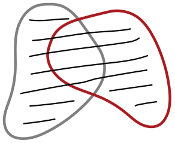
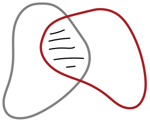
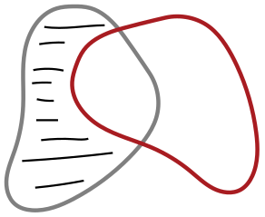
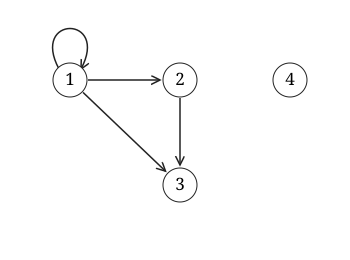
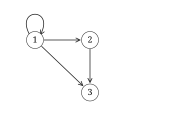
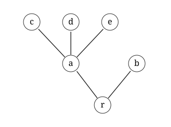
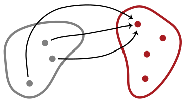
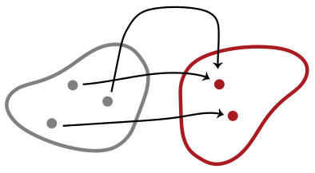

ગણ એટલે વસ્તુઓનો એવો સંગ્રહ, જેને એક જ વસ્તુ તરીકે ગણવામાં આવે. ગણ બનાવતી વસ્તુઓને તેના ઘટકો અથવા સભ્યો કહે છે. જો ગણ નો ઘટક હોય, તો આપણે લખીએ; જો ન હોય, તો લખીએ. જે ગણમાં એક પણ ઘટક ન હોય તેને ખાલી ગણ કહે છે અને “” વડે દર્શાવીએ છીએ.
આપણે ગણને કેવી રીતે નિર્દિષ્ટ કરીએ છીએ, તેના ઘટકોને કયા ક્રમમાં મૂકીએ છીએ, કે તેના ઘટકોને કેટલી વાર ગણીએ છીએ, તેનાથી કોઈ ફરક પડતો નથી. તેના ઘટકો કયા છે એટલું જ મહત્ત્વનું છે. આ વાતને આપણે નીચેના સિદ્ધાંતમાં વ્યક્ત કરીએ છીએ.
વ્યાખ્યા 1.1 (ઘટકો દ્વારા નિર્ધારિત સમાનતા). જો અને ગણો હોય, તો ત્યારે અને ત્યારે જ થાય જ્યારે નો દરેક ઘટક નો પણ ઘટક હોય અને ઊલટું પણ સાચું હોય.
ઘટકો દ્વારા નિર્ધારિત સમાનતાનો સિદ્ધાંત કેટલીક સંજ્ઞાઓને યોગ્ય ઠરાવે છે. સામાન્ય રીતે, આપણી પાસે , …, વસ્તુઓ હોય, તો એ ચોક્કસ એ જ ગણ છે જેના ઘટકો છે. આપણે “ચોક્કસ એ જ” શબ્દો પર ભાર મૂકીએ છીએ, કારણ કે આ સિદ્ધાંત જણાવે છે કે આવો એક જ ગણ હોઈ શકે. હકીકતમાં, આ સિદ્ધાંત નીચેની સમાનતાઓને પણ યોગ્ય ઠરાવે છે: આથી એ વાત સ્પષ્ટ થાય છે કે ગણોનો વિચાર કરતી વખતે તેમના ઘટકોનો ક્રમ કે તેમને કેટલી વાર દર્શાવ્યા છે તે આપણા માટે મહત્ત્વનું નથી.
ઉદાહરણ 1.2. તમારી પાસે કેટલીક વસ્તુઓ હોય, ત્યારે તેમને એકત્ર કરીને ગણ બનાવી શકો છો. દાખલા તરીકે, રિચર્ડનાં ભાઈબહેનોનો ગણ એક વ્યક્તિ ધરાવતો ગણ છે, અને તેને તરીકે લખી શકાય. કરતાં નાના ધન પૂર્ણાંકોનો ગણ છે, પરંતુ તેને અથવા તરીકે પણ લખી શકાય. ઘટકો દ્વારા નિર્ધારિત સમાનતાના સિદ્ધાંત અનુસાર આ બધા એક જ ગણ છે. કારણ કે નો દરેક ઘટક નો (અને નો) પણ ઘટક છે, અને ઊલટું પણ સાચું છે.
ઘણી વાર આપણે ગણના ઘટકોમાં રહેલા કોઈ સામાન્ય ગુણધર્મ દ્વારા ગણને નિર્દિષ્ટ કરીશું. તે માટે આપણે આ સંક્ષિપ્ત સંજ્ઞા વાપરીશું: . અહીં એ એવો ગુણધર્મ દર્શાવે છે જે ગણના ઘટકોમાં ગણાવા માટે માં હોવો જરૂરી છે.
ઉદાહરણ 1.3. આપણા ઉદાહરણમાં ને આ રીતે પણ નિર્દિષ્ટ કરી શક્યા હોત:
ઉદાહરણ 1.4. કોઈ સંખ્યાને પૂર્ણ સંખ્યા ત્યારે અને ત્યારે જ કહે છે જ્યારે તે તેના ઉચિત ભાજકોના સરવાળા જેટલી હોય (એટલે કે, તેને નિઃશેષ ભાગતા હોય પણ તેના જેટલા ન હોય તેવા ભાજકો). દાખલા તરીકે, પૂર્ણ સંખ્યા છે, કારણ કે તેના ઉચિત ભાજકો , અને છે, અને . હકીકતમાં, કરતાં નાના ધન પૂર્ણાંકોમાં એકમાત્ર પૂર્ણ સંખ્યા છે. આથી, ઘટકો દ્વારા નિર્ધારિત સમાનતાનો સિદ્ધાંત વાપરીને કહી શકીએ: જમણી બાજુની સંજ્ઞાને આપણે આ રીતે વાંચીએ: “એવા નો ગણ કે પૂર્ણ સંખ્યા છે અને ”. અહીંની સમાનતા ખાતરી આપે છે કે ગણોનો વિચાર કરતી વખતે તેમને કેવી રીતે નિર્દિષ્ટ કર્યા છે તે મહત્ત્વનું નથી. વધુ સામાન્ય રીતે, ઘટકો દ્વારા નિર્ધારિત સમાનતાનો સિદ્ધાંત ખાતરી આપે છે કે હોય તેવા નો હંમેશાં એક જ ગણ હોય. આથી ને હોય તેવા નો ચોક્કસ એ જ ગણ કહેવું યોગ્ય છે.
ઘટકો દ્વારા નિર્ધારિત સમાનતાનો સિદ્ધાંત ગણો એક જ છે તે બતાવવાની રીત આપે છે: બતાવવા માટે, જ્યારે પણ હોય ત્યારે પણ હોય, અને જ્યારે પણ હોય ત્યારે પણ હોય, તે બતાવો.
સ્વાધ્યાય 1.1. વધુમાં વધુ એક જ ખાલી ગણ હોઈ શકે તે સાબિત કરો. એટલે કે, જો અને એવા ગણો હોય જેમાં કોઈ ઘટકો ન હોય, તો થાય તે બતાવો.
આપણે ઘણી વાર ગણોની તુલના કરવા માગીશું. આવી તુલનાનો એક સ્પષ્ટ પ્રકાર આ છે: એક ગણમાં જે કંઈ છે તે બધું બીજા ગણમાં પણ છે. આ પરિસ્થિતિ એટલી મહત્ત્વની છે કે તેના માટે આપણે નવી સંજ્ઞા રજૂ કરીએ છીએ.
વ્યાખ્યા 2.1 (ઉપગણ). જો ગણ નો દરેક ઘટક નો પણ ઘટક હોય, તો આપણે કહીએ કે એ નો ઉપગણ છે, અને લખીએ. જો એ નો ઉપગણ ન હોય, તો લખીએ. જો પરંતુ હોય, તો લખીએ અને કહીએ કે એ નો ઉચિત ઉપગણ છે.
ઉદાહરણ 2.2. દરેક ગણ પોતાનો જ ઉપગણ છે, અને દરેક ગણનો ઉપગણ છે. યુગ્મ પ્રાકૃતિક સંખ્યાઓનો ગણ પ્રાકૃતિક સંખ્યાઓના ગણનો ઉપગણ છે. વળી, . પરંતુ એ નો ઉપગણ નથી.
ઉદાહરણ 2.3. સંખ્યા પૂર્ણાંકોના ગણનો ઘટક છે, જ્યારે યુગ્મ સંખ્યાઓનો ગણ પૂર્ણાંકોના ગણનો ઉપગણ છે. તેમ છતાં, કોઈ ગણ બીજા ગણનો ઘટક અને ઉપગણ બંને હોઈ શકે. દા.ત., અને પણ છે.
ઘટકો દ્વારા નિર્ધારિત સમાનતાનો સિદ્ધાંત ગણો એક જ હોવાની કસોટી આપે છે: ત્યારે અને ત્યારે જ થાય જ્યારે નો દરેક ઘટક નો પણ ઘટક હોય અને ઊલટું પણ સાચું હોય. “ઉપગણ”ની વ્યાખ્યા અનુસાર એ આ કસોટીના પહેલા ભાગનું જ નિરૂપણ છે: નો દરેક ઘટક નો પણ ઘટક છે. અલબત્ત, અને ની અદલાબદલી કરીએ તો પણ આ વ્યાખ્યા લાગુ પડે છે: ત્યારે અને ત્યારે જ થાય જ્યારે નો દરેક ઘટક નો પણ ઘટક હોય. આ તો ઘટકો દ્વારા નિર્ધારિત સમાનતાના સિદ્ધાંતનો “ઊલટું પણ” એવો ભાગ જ છે. બીજા શબ્દોમાં, આ સિદ્ધાંત અનુસાર ગણો ત્યારે અને ત્યારે જ સમાન હોય જ્યારે તેઓ એકબીજાના ઉપગણો હોય.
વિધાન 2.4. ત્યારે અને ત્યારે જ થાય જ્યારે અને બંને હોય.
કેટલીક વધુ ઉપયોગી સંજ્ઞાઓ રજૂ કરવાની આ સારી તક છે. એ નો ઉપગણ ક્યારે કહેવાય તેની વ્યાખ્યા આપતી વખતે આપણે “નો દરેક ઘટક …” કહ્યું હતું, અને “”ની જગ્યાએ “નો ઘટક છે” મૂક્યું હતું. પરંતુ આવાં વિધાનોનું આ સ્વરૂપ એટલું સામાન્ય છે કે તેના માટે ઔપચારિક સંજ્ઞા રજૂ કરવી ઉપયોગી થશે.
વ્યાખ્યા 2.5. એ નું સંક્ષિપ્ત સ્વરૂપ છે. તેવી જ રીતે, એ નું સંક્ષિપ્ત સ્વરૂપ છે.
આ સંજ્ઞા વાપરીને આપણે કહી શકીએ કે ત્યારે અને ત્યારે જ થાય જ્યારે હોય.
હવે આપણે એક ખાસ પ્રકારના ગણનો વિચાર કરીએ: આપેલા ગણના બધા ઉપગણોનો ગણ.
વ્યાખ્યા 2.6 (ઘાતગણ). ગણ ના બધા ઉપગણોથી બનેલા ગણને નો ઘાતગણ કહે છે અને વડે દર્શાવીએ છીએ.
ઉદાહરણ 2.7. ના બધા શક્ય ઉપગણો કયા છે? તે આ છે: , , , , , , , . આ બધા ઉપગણોનો ગણ છે:
સ્વાધ્યાય 2.1. ના બધા ઉપગણોની યાદી બનાવો.
સ્વાધ્યાય 2.2. જો માં ઘટકો હોય, તો માં ઘટકો હોય તે બતાવો.
ઉદાહરણ 3.1. આપણે મુખ્યત્વે એવા ગણોનો અભ્યાસ કરીશું જેમના ઘટકો ગાણિતિક વસ્તુઓ હોય. આવા ચાર ગણો એટલા મહત્ત્વના છે કે તેમને ખાસ નામ આપેલાં છે: આ બધા અનંત ગણો છે, એટલે કે દરેકમાં અનંત સંખ્યામાં ઘટકો છે.
આ ગણોમાં આગળ વધતા જઈએ તેમ આપણી પાસે વધુ સંખ્યાઓ ઉમેરાતી જાય છે. હકીકતમાં, હોવું સ્પષ્ટ થવું જોઈએ: દરેક પ્રાકૃતિક સંખ્યા પૂર્ણાંક છે; દરેક પૂર્ણાંક સંમેય સંખ્યા છે; અને દરેક સંમેય સંખ્યા વાસ્તવિક સંખ્યા છે. તેવી જ રીતે, હોવું પણ સ્પષ્ટ થવું જોઈએ, કારણ કે પૂર્ણાંક છે પરંતુ પ્રાકૃતિક સંખ્યા નથી, અને સંમેય છે પરંતુ પૂર્ણાંક નથી. , એટલે કે કેટલીક વાસ્તવિક સંખ્યાઓ સંમેય નથી, તે એટલું સ્પષ્ટ નથી.
ક્યારેક આપણે ધન પૂર્ણાંકોનો ગણ અને માત્ર પહેલી બે પ્રાકૃતિક સંખ્યાઓ ધરાવતો ગણ પણ વાપરીશું.
ઉદાહરણ 3.2 (પ્રતીકશ્રેણીઓ). બીજું રસપ્રદ ઉદાહરણ મૂળાક્ષરસમૂહ પરથી બનતી સાંત પ્રતીકશ્રેણીઓનો ગણ છે: ના ઘટકોનો કોઈ પણ સાંત અનુક્રમ પરની પ્રતીકશ્રેણી છે. દરેક મૂળાક્ષરસમૂહ માટે, પરની પ્રતીકશ્રેણીઓમાં આપણે ખાલી પ્રતીકશ્રેણી નો સમાવેશ કરીએ છીએ. દાખલા તરીકે, જો એ ના “અક્ષરો”થી બનેલી પ્રતીકશ્રેણી હોય, તો આપણે કહીએ કે તેની લંબાઈ છે અને લખીએ.
ઉદાહરણ 3.3 (અનંત અનુક્રમો). કોઈ પણ ગણ માટે આપણે ના ઘટકોના અનંત અનુક્રમોનો ગણ પણ વિચારી શકીએ. અનંત અનુક્રમ એ વસ્તુઓની એક દિશામાં અનંત સુધી ચાલતી યાદી છે, જેમાંની દરેક વસ્તુ નો ઘટક છે.
1માં આપણે ગુણધર્મ દ્વારા ગણોની વ્યાખ્યા, એટલે કે સ્વરૂપની વ્યાખ્યાઓ રજૂ કરી હતી. અહીં આપણે કોઈ ગુણધર્મ નો ઉપયોગ કરીએ છીએ, અને આ ગુણધર્મમાં અગાઉ વ્યાખ્યાયિત કરેલા ગણોનો ઉલ્લેખ હોઈ શકે છે. દાખલા તરીકે, જો અને ગણો હોય, તો એ બધી વસ્તુઓનો ગણ છે જે અથવા ના ઘટકો હોય; એટલે કે તે અને ના ઘટકોને એકત્ર કરતો ગણ છે. આને 1માં દર્શાવ્યા મુજબ જોઈ શકાય, જ્યાં રંગેલો વિસ્તાર બંને ગણો અને ના ઘટકોને એકસાથે દર્શાવે છે.

ગણો પરની આ ક્રિયા—તેમને એકત્ર કરવાની ક્રિયા—ખૂબ ઉપયોગી અને સામાન્ય છે, તેથી આપણે તેને ઔપચારિક નામ અને સંકેત આપીએ છીએ.
વ્યાખ્યા 4.1 (યોગગણ). બે ગણો અને નો યોગગણ, જેને લખીએ છીએ, એ બધી વસ્તુઓનો ગણ છે જે ના, ના, અથવા બંનેના ઘટકો હોય.
ઉદાહરણ 4.2. ઘટકો કેટલી વાર આવ્યા છે તે મહત્ત્વનું ન હોવાથી, કોઈ ઘટક સામાન્ય હોય તેવા બે ગણોના યોગગણમાં તે ઘટક એક જ વાર આવે છે. દા.ત., .
ગણ અને તેના કોઈ ઉપગણનો યોગગણ મોટો ગણ પોતે જ છે: .
ગણ અને ખાલી ગણનો યોગગણ તે ગણ પોતે જ છે: .
સ્વાધ્યાય 4.1. જો હોય, તો થાય તે સાબિત કરો.
આપણે યોગક્રિયાની “દ્વૈત” ક્રિયાનો પણ વિચાર કરી શકીએ. આ ક્રિયા એવા બધા ઘટકોનો ગણ બનાવે છે જે ના ઘટકો હોય અને ના પણ ઘટકો હોય. આ ક્રિયાને છેદક્રિયા કહે છે અને તેને 2માં દર્શાવ્યા પ્રમાણે ચિત્રી શકાય.

વ્યાખ્યા 4.3 (છેદગણ). બે ગણો અને નો છેદગણ, જેને લખીએ છીએ, એ બધી વસ્તુઓનો ગણ છે જે અને બંનેના ઘટકો હોય. જો બે ગણોનો છેદગણ ખાલી હોય, તો તેમને અલગ ગણો કહે છે. આનો અર્થ એ છે કે તેમનામાં એક પણ સામાન્ય ઘટક નથી.
ઉદાહરણ 4.4. જો બે ગણોમાં એક પણ સામાન્ય ઘટક ન હોય, તો તેમનો છેદગણ ખાલી છે: .
જો બે ગણોમાં સામાન્ય ઘટકો હોય, તો તેમનો છેદગણ એ બધા ઘટકોનો ગણ છે: .
ગણ અને તેના કોઈ ઉપગણનો છેદગણ નાનો ગણ પોતે જ છે: .
કોઈ પણ ગણ અને ખાલી ગણનો છેદગણ ખાલી છે: .
સ્વાધ્યાય 4.2. જો હોય, તો થાય તે ચોકસાઈપૂર્વક સાબિત કરો.
આપણે બે કરતાં વધુ ગણોનો યોગગણ કે છેદગણ પણ બનાવી શકીએ. સામાન્ય રીતે આ કરવાની એક સુઘડ રીત નીચે મુજબ છે: ધારો કે જે બધા ગણોનો યોગગણ (અથવા છેદગણ) બનાવવો છે તેમને આપણે એક જ ગણમાં એકત્ર કરીએ. ત્યાર પછી, આપણા બધા મૂળ ગણોના યોગગણની વ્યાખ્યા એ બધી વસ્તુઓના ગણ તરીકે કરી શકીએ જે આ ગણના ઓછામાં ઓછા એક ઘટકમાં હોય; અને છેદગણની વ્યાખ્યા એ બધી વસ્તુઓના ગણ તરીકે કરી શકીએ જે આ ગણના દરેક ઘટકમાં હોય.
વ્યાખ્યા 4.5. જો ગણોનો ગણ હોય, તો એ ના ઘટકોના ઘટકોનો ગણ છે:
વ્યાખ્યા 4.6. જો ગણોનો ગણ હોય, તો એ બધી વસ્તુઓનો ગણ છે જે ના બધા ઘટકોમાં સામાન્ય હોય:
ઉદાહરણ 4.7. ધારો કે . તો અને .
સ્વાધ્યાય 4.3. જો ગણ હોય અને હોય, તો થાય તે બતાવો.
ગણોના અનુક્રમ , , …માટે પણ આપણે આમ જ કરી શકીએ:
જ્યારે આપણી પાસે ગણોનો સૂચકગણ હોય, એટલે કે એવો ગણ હોય કે દરેક માટે આપણે નો વિચાર કરતા હોઈએ, ત્યારે આ સંક્ષિપ્ત સંજ્ઞાઓ પણ વાપરી શકીએ:
છેલ્લે, આપણે ના એવા બધા ઘટકોના ગણનો વિચાર કરવા માગીએ જે માં નથી. તેને 3માં દર્શાવ્યા પ્રમાણે ચિત્રી શકાય.

વ્યાખ્યા 4.8 (તફાવત ગણ). તફાવત ગણ એ ના એવા બધા ઘટકોનો ગણ છે જે ના પણ ઘટકો નથી, એટલે કે,
સ્વાધ્યાય 4.4. જો હોય, તો થાય તે સાબિત કરો.
ઘટકો દ્વારા નિર્ધારિત સમાનતાના સિદ્ધાંત પરથી મળે છે કે ગણના ઘટકોનો કોઈ ક્રમ હોતો નથી. તેથી ક્રમ દર્શાવવા માટે આપણે ક્રમયુક્ત જોડ વાપરીએ છીએ. ક્રમ વગરની જોડ માં ક્રમ મહત્ત્વનો નથી: . ક્રમયુક્ત જોડમાં તે મહત્ત્વનો છે: જો હોય, તો .
ગણસિદ્ધાંતમાં ક્રમયુક્ત જોડને કેવી રીતે સમજવી? ખાસ કરીને, આપણે એ વિચાર જાળવવા માગીએ છીએ કે બે ક્રમયુક્ત જોડ ત્યારે અને ત્યારે જ સમાન હોય જ્યારે તેમના પ્રથમ ઘટકો એક જ હોય અને તેમના બીજા ઘટકો પણ એક જ હોય, એટલે કે: ગણસિદ્ધાંતમાં આપણે વીનર–કુરાતોવ્સ્કીની વ્યાખ્યા વડે ક્રમયુક્ત જોડની વ્યાખ્યા આપી શકીએ.
વ્યાખ્યા 5.1 (ક્રમયુક્ત જોડ). .
સ્વાધ્યાય 5.1. 5.1 વાપરીને સાબિત કરો કે ત્યારે અને ત્યારે જ થાય જ્યારે અને બંને હોય.
ક્રમયુક્ત જોડની વ્યાખ્યા નક્કી કર્યા પછી, તેને વાપરીને વધુ ગણોની વ્યાખ્યા આપી શકીએ. દાખલા તરીકે, ક્યારેક આપણે બે કરતાં વધુ વસ્તુઓના ક્રમયુક્ત અનુક્રમો પણ માગીએ, જેમ કે ત્રિજોડ , ચતુર્જોડ , વગેરે. ત્રિજોડને એવી ખાસ ક્રમયુક્ત જોડ તરીકે સમજી શકીએ જેનો પ્રથમ ઘટક પોતે જ ક્રમયુક્ત જોડ હોય: એટલે . ચતુર્જોડ માટે પણ આ જ વાત સાચી છે: એટલે , વગેરે. સામાન્ય રીતે આપણે ક્રમયુક્ત -જોડ ની વાત કરીએ છીએ.
ક્રમયુક્ત જોડના, અથવા અન્ય ક્રમયુક્ત -જોડના, કેટલાક ગણો ઉપયોગી થશે.
વ્યાખ્યા 5.2 (કાર્તેઝીય ગુણાકાર). આપેલા ગણો અને ના કાર્તેઝીય ગુણાકાર ની વ્યાખ્યા આ પ્રમાણે છે:
ઉદાહરણ 5.3. જો અને હોય, તો તેમનો ગુણાકાર આ છે:
ઉદાહરણ 5.4. જો ગણ હોય, તો નો પોતાની સાથેનો ગુણાકાર , તરીકે પણ લખાય છે. તે એવી બધી જોડ નો ગણ છે જેમાં હોય. આવી બધી ત્રિજોડ નો ગણ છે, વગેરે. આપણે પુનરાવર્તી વ્યાખ્યા આપી શકીએ:
સ્વાધ્યાય 5.2. ના બધા ઘટકોની યાદી બનાવો.
વિધાન 5.5. જો માં ઘટકો અને માં ઘટકો હોય, તો માં ઘટકો હોય.
સાબિતી. ના દરેક ઘટક માટે સ્વરૂપના ઘટકો હોય છે. લો. જ્યારે પણ હોય ત્યારે હોવાથી થાય. પરંતુ જો હોય, તો , અને તેથી તેમાં ઘટકો હોય.
આ વાત ચિત્રરૂપે જોવા માટે ના ઘટકોને જાળીમાં ગોઠવો: બધા જુદા છે અને બધા પણ જુદા છે, તેથી આ જાળીની કોઈ બે જોડ એકસરખી નથી, અને તેમાં કુલ જોડ છે.
સ્વાધ્યાય 5.3. પર ગાણિતિક અનુમાન વાપરીને બતાવો કે દરેક માટે, જો માં ઘટકો હોય, તો માં ઘટકો હોય.
ઉદાહરણ 5.6. જો ગણ હોય, તો પરનો શબ્દ એટલે ના ઘટકોનો કોઈ પણ અનુક્રમ. અનુક્રમને ના ઘટકોની -જોડ તરીકે સમજી શકાય. દાખલા તરીકે, જો હોય, તો “” અનુક્રમને ત્રિજોડ તરીકે સમજી શકાય. શબ્દો, એટલે કે પ્રતીકોના અનુક્રમો, કમ્પ્યૂટર વિજ્ઞાનમાં અત્યંત મહત્ત્વના છે. પ્રણાલી અનુસાર આપણે ના ઘટકોને લંબાઈ ના અનુક્રમો તરીકે અને ને લંબાઈ ના અનુક્રમ તરીકે ગણીએ છીએ. આથી પરના બધા શબ્દોનો ગણ આ છે:
ઘટકો દ્વારા નિર્ધારિત સમાનતાનો સિદ્ધાંત હોય તેવા ના ચોક્કસ એ જ ગણ માટે સંજ્ઞાને યોગ્ય ઠરાવે છે. પરંતુ આ સિદ્ધાંત ખરેખર માત્ર નીચેના વિચારને યોગ્ય ઠરાવે છે: જો એવો ગણ હોય જેના સભ્યો બરાબર ગુણધર્મ ધરાવતી બધી વસ્તુઓ જ હોય, તો આવો એક જ ગણ હોય. બીજી રીતે કહીએ તો, કોઈ નક્કી કર્યા પછી, ગણ અસ્તિત્વ ધરાવતો હોય તો અનન્ય છે.
પરંતુ આ શરત મહત્ત્વની છે! ખાસ કરીને, દરેક ગુણધર્મ વડે ગણરચના કરી શકાતી નથી. એટલે કે કેટલાક ગુણધર્મો ગણની વ્યાખ્યા આપતા નથી. જો બધા ગુણધર્મો આમ કરતા હોત, તો સીધો જ વિરોધ ઊભો થાત. આનું સૌથી જાણીતું ઉદાહરણ રસેલનો વિરોધાભાસ છે.
ગણો બીજા ગણોના ઘટકો હોઈ શકે છે—દાખલા તરીકે, ગણ નો ઘાતગણ ગણોથી બનેલો છે. આથી કોઈ ગણ બીજા ગણનો ઘટક છે કે નહીં તે પૂછવું કે તપાસવું અર્થપૂર્ણ છે. શું કોઈ ગણ પોતાનો જ સભ્ય હોઈ શકે? ગણના ખ્યાલમાં આને બાકાત રાખે એવું કંઈ દેખાતું નથી. દાખલા તરીકે, જો બધા ગણો વસ્તુઓનો સંગ્રહ બનાવતા હોય, તો કોઈને લાગે કે તેમને એક જ ગણમાં એકત્ર કરી શકાય—બધા ગણોનો ગણ. અને તે પોતે ગણ હોવાથી બધા ગણોના ગણનો ઘટક હોય.
પોતે પોતાનો ઘટક ન હોવાના, એટલે કે સ્વસભ્ય ન હોવાના, ગુણધર્મનો વિચાર કરીએ ત્યારે રસેલનો વિરોધાભાસ ઊભો થાય છે. ધારો કે એવા બધા ગણોનો ગણ છે જે પોતે પોતાના ઘટક નથી. તો શું અસ્તિત્વ ધરાવે છે? આપણે સાબિત કરી શકીએ છીએ કે તે અસ્તિત્વ ધરાવતો નથી.
પ્રમેય 6.1 (રસેલનો વિરોધાભાસ). એવો કોઈ ગણ નથી.
સાબિતી. જો અસ્તિત્વ ધરાવતો હોય, તો ત્યારે અને ત્યારે જ થાય જ્યારે હોય, જે પરસ્પરવિરોધ છે.
આ સાબિતીને વધુ ધીમેથી સમજીએ. જો અસ્તિત્વ ધરાવતો હોય, તો છે કે નહીં તે પૂછવું અર્થપૂર્ણ છે. ધારો કે ખરેખર છે. હવે ની વ્યાખ્યા એવા બધા ગણોના ગણ તરીકે આપેલી છે જે પોતે પોતાના ઘટકો નથી. આથી, જો હોય, તો પોતે ને વ્યાખ્યાયિત કરતો ગુણધર્મ ધરાવતો નથી. પરંતુ આ ગુણધર્મ ધરાવતા ગણો જ માં છે, તેથી એ નો ઘટક હોઈ શકે નહીં, એટલે કે . પરંતુ એકસાથે નો ઘટક હોય અને ન પણ હોય તે શક્ય નથી. આથી આપણને પરસ્પરવિરોધ મળે છે.
ની ધારણા પરસ્પરવિરોધ તરફ દોરી જાય છે, તેથી છે. પરંતુ આ પણ પરસ્પરવિરોધ તરફ દોરી જાય છે! કારણ કે જો હોય, તો પોતે ને વ્યાખ્યાયિત કરતો ગુણધર્મ ધરાવે છે, અને તેથી, બીજા બધા સ્વસભ્ય ન હોય તેવા ગણોની જેમ, પણ નો ઘટક હોય. ફરીથી, તે એકસાથે નો ઘટક ન હોય અને હોય પણ ખરો તે શક્ય નથી.
રસેલના વિરોધાભાસમાં ન ફસાતો ગણસિદ્ધાંત કેવી રીતે રચી શકાય? એટલે કે અસ્તિત્વ ધરાવે છે એવો અસંગત દાવો ટાળતો ગણસિદ્ધાંત કેવી રીતે રચી શકાય? તે માટે એવી પૂર્વધારણાઓ નક્કી કરવી પડે જે ગણો ક્યારે અસ્તિત્વ ધરાવે છે (અને ક્યારે નથી ધરાવતા) તે કહેવા માટે અત્યંત ચોક્કસ શરતો આપે.
આ પ્રકરણમાં રૂપરેખા આપેલો ગણસિદ્ધાંત આવું કરતો નથી. તે ખરેખર સહજ ખ્યાલો પર આધારિત છે. તે માત્ર એટલું કહે છે કે ગણો ઘટકો દ્વારા નિર્ધારિત સમાનતાના સિદ્ધાંતને અનુસરે છે અને જો તમારી પાસે કેટલાક ગણો હોય, તો તેમનો યોગગણ, છેદગણ વગેરે બનાવી શકો છો. ગણસિદ્ધાંતને આના કરતાં વધુ ચોકસાઈથી વિકસાવવો શક્ય છે.
3માં આપણે કેટલાક મહત્વના ગણોનો ઉલ્લેખ કર્યો હતો: , , , . આમાંના કેટલાક ગણોના ઘટકો વચ્ચેના કેટલાક રસપ્રદ સંબંધો તમને ચોક્કસ યાદ હશે. દાખલા તરીકે, આ દરેક ગણ પર એક સર્વસ્વીકૃત ક્રમ સંબંધ છે. તેની સાથે તાદાત્મ્ય ધરાવે છે એવો સંબંધ પણ છે, જે દરેક વસ્તુ પોતાની સાથે ધરાવે છે અને બીજી કોઈ વસ્તુ સાથે ધરાવતી નથી. આગળ આપણે બીજા ઘણા રસપ્રદ સંબંધો જોઈશું, અને સંભવિત સંબંધો તો એથીયે વધુ છે. જોકે, તેમની સમીક્ષા કરતાં પહેલાં આપણે એ નોંધથી શરૂ કરીશું કે સંબંધોને ખાસ પ્રકારના ગણ તરીકે જોઈ શકાય છે.
આ માટે 5માંથી બે બાબતો યાદ કરો. પ્રથમ, ક્રમયુક્ત જોડનો ખ્યાલ યાદ કરો: અને આપેલાં હોય તો આપણે રચી શકીએ છીએ. અહીં ઘટકોનો ક્રમ મહત્વનો છે. તેથી જો , તો . (આની સરખામણી અક્રમયુક્ત જોડ, એટલે કે -ઘટકવાળા ગણ સાથે કરો, જેમાં .) બીજું, કાર્તેઝીય ગુણાકારનો ખ્યાલ યાદ કરો: જો અને ગણો હોય, તો આપણે રચી શકીએ છીએ; તે એવા બધા જોડ નો ગણ છે જેમાં અને . ખાસ કરીને, એ માંથી મળતા બધા ક્રમયુક્ત જોડનો ગણ છે.
હવે આપણે એક ગણ પરનો ચોક્કસ સંબંધ લઈશું: પ્રાકૃતિક સંખ્યાઓના ગણ પરનો -સંબંધ. સંખ્યાઓના એવા બધા જોડ નો ગણ લો જેમાં , એટલે કે, એ કરતાં નાનું હોવું અને જોડ એ નો સભ્ય હોવું, એ બે વચ્ચે ગાઢ જોડાણ છે, એટલે કે: ખરેખર, કોઈ માહિતી ગુમાવ્યા વિના, આપણે ગણ ને પરનો -સંબંધ જ છે એમ ગણી શકીએ છીએ.
એ જ રીતે સંખ્યાઓ વચ્ચેના કોઈ પણ સંબંધ માટે આપણે નો એક ઉપગણ રચી શકીએ છીએ. ઊલટું, સંખ્યાઓના જોડનો કોઈ પણ ગણ આપેલો હોય, તો તેને અનુરૂપ સંખ્યાઓ વચ્ચે એક સંબંધ મળે છે, એટલે કે એવો સંબંધ જે એ સાથે ધરાવે તો અને તો જ . આ નીચેની વ્યાખ્યાને વાજબી ઠરાવે છે:
વ્યાખ્યા 7.1 (દ્વિઘટકી સંબંધ). ગણ પરનો દ્વિઘટકી સંબંધ એ નો ઉપગણ છે. જો એ પરનો દ્વિઘટકી સંબંધ હોય અને , તો આપણે ક્યારેક માટે (અથવા ) લખીએ છીએ.
ઉદાહરણ 7.2. પ્રાકૃતિક સંખ્યાઓના જોડનો ગણ નીચે પ્રમાણે દ્વિપરિમાણીય શ્રેણિકમાં સૂચવી શકાય: અહીં આપણે વિકર્ણ ઘાટા અક્ષરે દર્શાવ્યો છે, કારણ કે વિકર્ણ પર આવેલા જોડનો બનેલો નો ઉપગણ, એટલે કે, એ પરનો તાદાત્મ્ય સંબંધ છે. (તાદાત્મ્ય સંબંધ વારંવાર વપરાય છે, તેથી કોઈ પણ ગણ માટે એવી વ્યાખ્યા કરીએ.) વિકર્ણની ઉપર આવેલા બધા જોડનો ઉપગણ, એટલે કે, એ કરતાં નાનું એવો સંબંધ છે, એટલે કે તો અને તો જ . વિકર્ણની નીચે આવેલા જોડનો ઉપગણ, એટલે કે, એ કરતાં મોટું એવો સંબંધ છે, એટલે કે તો અને તો જ . અને નો યોગગણ, જેને આપણે કહી શકીએ, એ કરતાં નાનું અથવા સમાન એવો સંબંધ છે: તો અને તો જ . એ જ રીતે, એ કરતાં મોટું અથવા સમાન એવો સંબંધ છે. આ સંબંધો , , અને ખાસ પ્રકારના સંબંધો છે, જેને ક્રમો કહે છે. અને નો એવો ગુણધર્મ છે કે કોઈ સંખ્યા પોતાની સાથે કે ધરાવતી નથી (એટલે કે, દરેક માટે, ન તો , ન તો ). આ ગુણધર્મવાળા સંબંધોને અસ્વવાચક કહે છે અને, જો તેઓ ક્રમો પણ હોય, તો તેમને કડક ક્રમો કહે છે.
ક્રમો અને તાદાત્મ્ય મહત્વના અને સ્વાભાવિક સંબંધો હોવા છતાં, એ બાબત પર ભાર મૂકવો જોઈએ કે આપણી વ્યાખ્યા પ્રમાણે નો કોઈ પણ ઉપગણ એ પરનો સંબંધ છે, ભલે તે ગમે તેટલો અસ્વાભાવિક કે કૃત્રિમ લાગે. ખાસ કરીને, એ કોઈ પણ ગણ પરનો સંબંધ છે (ખાલી સંબંધ, જે ઘટકોનું કોઈ જોડ ધરાવતું નથી), અને પોતે પણ પરનો સંબંધ છે (જે દરેક જોડ ધરાવે છે), જેને સાર્વત્રિક સંબંધ કહે છે. પણ જેવું કંઈક પણ સંબંધ ગણાય છે.
સ્વાધ્યાય 7.1. ગણ પરના સંબંધ ના ઘટકોની યાદી આપો.
7માં આપણે સંબંધોને ચોક્કસ ગણો તરીકે વ્યાખ્યાયિત કર્યા હતા. અહીં થોડું થોભીને એક તત્વજ્ઞાનવિષયક પ્રશ્ન પૂછવો જોઈએ: આવી વ્યાખ્યા શું કરે છે? આપણે કોઈ તત્વમીમાંસાકીય તાદાત્મ્યનાં તથ્યો શોધી કાઢ્યાં છે એમ કહેવું જોઈએ, તે ભારે શંકાસ્પદ છે; દાખલા તરીકે, પરનો ક્રમ સંબંધ આપણે 7માં વ્યાખ્યાયિત કરેલો ગણ જ નીકળ્યો એમ કહેવું. તેના ત્રણ કારણો છે.
પ્રથમ: 5.1માં આપણે વ્યાખ્યાયિત કર્યું હતું. તેને બદલે એવી વ્યાખ્યા લો. જ્યારે , ત્યારે થાય છે. પણ ને બદલે ને ક્રમયુક્ત જોડની આપણી વ્યાખ્યા તરીકે એટલી જ સારી રીતે સ્વીકારી શક્યા હોત. બંને વ્યાખ્યાઓ સરખી રીતે કામ આપત. તેથી હવે આપણી પાસે પ્રાકૃતિક સંખ્યાઓ પરનો ક્રમ સંબંધ “હોવા” માટે બે સરખા યોગ્ય ઉમેદવારો છે, એટલે કે: ઘટકો દ્વારા નિર્ધારિત સમાનતાના સિદ્ધાંતથી હોવાથી, સ્પષ્ટ છે કે તે બંને પરના ક્રમ સંબંધ સાથે તાદાત્મ્ય ધરાવી શકે નહીં. પરંતુ હકીકતમાં ને બદલે (અથવા ઊલટું) જ ક્રમ સંબંધ છે એવો દાવો કરવો મનસ્વી અને તેથી કંઈક ક્ષોભજનક બને. (આ ગણસિદ્ધાંતમાં બધું ઘટાડી શકાય એવા મત વિરુદ્ધની દલીલનો એક અત્યંત સરળ દાખલો છે, જેને બેનાસેરાફે 1965માં જાણીતી બનાવી હતી. આપણે ઘણી વાર ફરી તેની ચર્ચા કરીશું.)
બીજું: જો આપણે માનીએ કે દરેક સંબંધને કોઈ ગણ સાથે તાદાત્મ્ય ધરાવતો ગણવો જોઈએ, તો ગણના સભ્યપદનો સંબંધ પોતે એક ચોક્કસ ગણ હોવો જોઈએ. ખરેખર, તે ગણ જ હોવો જોઈએ. પરંતુ શું આ ગણ અસ્તિત્વ ધરાવે છે? રસેલના વિરોધાભાસને જોતાં, આવો ગણ અસ્તિત્વ ધરાવે છે એવો દાવો સહજ રીતે સ્વીકારી શકાય તેમ નથી. ખરેખર, ગણસિદ્ધાંતને સ્વયંસિદ્ધિઓ પર આધારિત સિદ્ધાંત તરીકે ચોકસાઈપૂર્વક વિકસાવી શકાય છે, અને તે સિદ્ધાંત ખરેખર આ ગણના અસ્તિત્વનો નિષેધ કરશે. તેથી, કેટલાક સંબંધોને ગણ તરીકે લઈ શકાય તો પણ, ગણના સભ્યપદના સંબંધને વિશેષ કિસ્સો ગણવો પડશે.
ત્રીજું: સંબંધોને ગણો સાથે “એકરૂપ” ગણતી વખતે આપણે કહ્યું હતું કે માટે લખવાની છૂટ રાખીશું. આ બરાબર છે, જો સભ્યપદના સંબંધ “”ને વિધેય તરીકે લેવામાં આવે. પરંતુ જો આપણે માનીએ કે “” કોઈ ચોક્કસ પ્રકારના ગણને સૂચવે છે, તો “” એ પદપ્રયોગમાં ગણોને સૂચવતાં માત્ર ત્રણ એકવચની પદો જ છે: “”, “” અને “”. આવી નામોની યાદી કોઈ વિધાન વ્યક્ત કરવા માટે “પ્યાલો કલમદાની મેજ” જેવી નિરર્થક પ્રતીકશ્રેણી કરતાં વધુ સમર્થ નથી. ફરીથી, કેટલાક સંબંધોને ગણ તરીકે લઈ શકાય તો પણ, ગણના સભ્યપદનો સંબંધ વિશેષ કિસ્સો હોવો જોઈએ. (આમાં ફ્રેગેના ઘોડો ખ્યાલના વિરોધાભાસનું સરળ સ્વરૂપ અને વિટ્ગેન્સ્ટાઇને એક વખત રસેલ સામે ઉઠાવેલો પ્રસિદ્ધ વાંધો ભેગાં થયાં છે.)
તો આ પરથી આપણે શું સમજવું? સંખ્યાઓ પરના સંબંધો ગણો છે એમ કહેવામાં કંઈ ખોટું નથી. આ વાત કયા આશયથી કહેવાય છે તે માત્ર સમજવું જોઈએ. આપણે કોઈ તત્વમીમાંસાકીય તાદાત્મ્યનું તથ્ય કહી રહ્યા નથી. આપણે ફક્ત એ નોંધીએ છીએ કે ચોક્કસ સંદર્ભોમાં (ચોક્કસ) સંબંધોને ચોક્કસ ગણો તરીકે લઈ શકીએ છીએ (અને લઈશું).
કેટલાક પ્રકારના સંબંધો એટલા સામાન્ય છે કે તેમને વિશેષ નામ આપવામાં આવ્યાં છે. દાખલા તરીકે, અને બંને પોતપોતાના પ્રદેશો પર (માનો કે માટે અને માટે ) એકસરખી રીતે સંબંધ સ્થાપે છે. આ સંબંધો કઈ ચોક્કસ રીતે સરખા છે અને કઈ રીતે જુદા પડે છે તે સમજવા માટે, સંબંધોમાં હોઈ શકે એવા કેટલાક વિશેષ ગુણધર્મો મુજબ આપણે તેમનું વર્ગીકરણ કરીએ છીએ. આ વિશેષ ગુણધર્મોમાંના કેટલાક (અથવા તેમના સંયોજનો) ખાસ મહત્વના નીવડે છે: ક્રમો અને સામ્ય સંબંધો.
વ્યાખ્યા 9.1 (સ્વવાચકતા). સંબંધ સ્વવાચક હોય તો અને તો જ, દરેક માટે, .
વ્યાખ્યા 9.2 (પરંપરિતતા). સંબંધ પરંપરિત હોય તો અને તો જ, જ્યારે પણ અને , ત્યારે પણ.
વ્યાખ્યા 9.3 (સંમિતતા). સંબંધ સંમિત હોય તો અને તો જ, જ્યારે પણ , ત્યારે પણ.
વ્યાખ્યા 9.4 (વિસંમિતતા). સંબંધ વિસંમિત હોય તો અને તો જ, જ્યારે પણ અને બંને, ત્યારે (અથવા, બીજા શબ્દોમાં: જો , તો કાં અથવા ).
સંમિત સંબંધમાં અને હંમેશાં એકસાથે સાચાં હોય છે, અથવા બંનેમાંથી એકેય સાચું હોતું નથી. વિસંમિત સંબંધમાં અને એકસાથે સાચાં હોય, તો તે માત્ર હોય ત્યારે જ શક્ય છે. નોંધો કે આમાં હોય ત્યારે અને સાચાં હોવાં જોઈએ એવી માંગ નથી; માત્ર એ શક્યતા બાકાત રખાતી નથી. તેથી વિસંમિત સંબંધ સ્વવાચક હોઈ શકે છે, પણ દરેક વિસંમિત સંબંધ સ્વવાચક હોય એવું નથી. એ પણ નોંધો કે વિસંમિત હોવું અને માત્ર સંમિત ન હોવું એ જુદી શરતો છે. ખરેખર, કોઈ સંબંધ એકસાથે સંમિત અને વિસંમિત બંને હોઈ શકે છે (દા.ત., તાદાત્મ્ય સંબંધ એવો છે).
વ્યાખ્યા 9.5 (તુલનાયુક્તતા). સંબંધ તુલનાયુક્ત કહેવાય જો, દરેક માટે, હોય તો કાં અથવા .
સ્વાધ્યાય 9.1. એવા સંબંધોના દાખલા આપો જે (a) સ્વવાચક અને સંમિત હોય પણ પરંપરિત ન હોય, (b) સ્વવાચક અને વિસંમિત હોય, (c) વિસંમિત અને પરંપરિત હોય પણ સ્વવાચક ન હોય, અને (d) સ્વવાચક, સંમિત અને પરંપરિત હોય. સંખ્યાઓ કે ગણો પરના સંબંધો વાપરશો નહીં.
વ્યાખ્યા 9.6 (અસ્વવાચકતા). સંબંધ અસ્વવાચક કહેવાય જો, દરેક માટે, સાચું ન હોય.
વ્યાખ્યા 9.7 (અસંમિતતા). સંબંધ અસંમિત કહેવાય જો, કોઈ પણ જોડ માટે અને બંને સાચાં ન હોય.
નોંધો કે જો , તો પરનો કોઈ અસ્વવાચક સંબંધ સ્વવાચક નથી અને પરનો દરેક અસંમિત સંબંધ વિસંમિત પણ છે. જોકે, એવા છે જે સ્વવાચક પણ નથી અને અસ્વવાચક પણ નથી, અને એવા વિસંમિત સંબંધો છે જે અસંમિત નથી.
ગણ પરનો તાદાત્મ્ય સંબંધ સ્વવાચક, સંમિત અને પરંપરિત છે. આ ત્રણેય ગુણધર્મો ધરાવતા સંબંધો ઘણા સામાન્ય છે.
વ્યાખ્યા 10.1 (સામ્ય સંબંધ). સ્વવાચક, સંમિત અને પરંપરિત એવા સંબંધ ને સામ્ય સંબંધ કહે છે. ના ઘટકો અને એ -સામ્ય ધરાવે છે એમ કહેવાય જો .
સામ્ય સંબંધોથી સામ્ય વર્ગનો ખ્યાલ મળે છે. સામ્ય સંબંધ પ્રદેશને જુદા જુદા વર્ગોમાં “વહેંચે છે”. દરેક વર્ગની બધી વસ્તુઓ એકબીજા સાથે સંબંધ ધરાવે છે; અને જુદા વર્ગોની કોઈ વસ્તુઓ એકબીજા સાથે સંબંધ ધરાવતી નથી. ક્યારેક આ વર્ગોની જ સીધી વાત કરવી ઉપયોગી બને છે. તે માટે આપણે એક વ્યાખ્યા રજૂ કરીએ:
વ્યાખ્યા 10.2. ધારો કે સામ્ય સંબંધ છે. દરેક માટે, માં નો સામ્ય વર્ગ એ ગણ છે. અનુસાર નો ભાગફળ ગણ એ છે, એટલે કે આ સામ્ય વર્ગોનો ગણ.
સામ્ય વર્ગો ખરેખર નું વર્ગ વિભાજન કરે છે તે સાબિત કરીને, હવે પછીનું પરિણામ સામ્ય વર્ગની વ્યાખ્યાને સમર્થન આપે છે:
વિધાન 10.3. જો સામ્ય સંબંધ હોય, તો હોય તો અને તો જ .
સાબિતી. ડાબેથી જમણી દિશા માટે, ધારો કે , અને લો. તો વ્યાખ્યા પ્રમાણે . સામ્ય સંબંધ હોવાથી, . (વિગતે કહીએ તો: અને સંમિત હોવાથી મળે છે, અને અને પરંપરિત હોવાથી મળે છે.) તેથી . આથી સામાન્ય રીતે . પણ બરાબર એ જ રીતે, . તેથી ઘટકો દ્વારા નિર્ધારિત સમાનતાના સિદ્ધાંતથી .
જમણેથી ડાબી દિશા માટે, ધારો કે . સ્વવાચક હોવાથી , તેથી . આમ એવી ધારણાથી પણ મળે છે. તેથી .
ઉદાહરણ 10.4. મોડ્યુલો અંકગણિતમાંથી સામ્ય સંબંધોનો સુંદર દાખલો મળે છે. કોઈ પણ , અને માટે, એમ કહીએ જો અને ફક્ત જો ને વડે ભાગતાં જે શેષ મળે તે જ શેષ ને વડે ભાગતાં મળે. (થોડું વધુ સાંકેતિક રીતે: તો અને તો જ, કોઈક માટે, .) હવે, કોઈ પણ માટે, સામ્ય સંબંધ છે. અને થી બરાબર જુદા સામ્ય વર્ગો મળે છે; એટલે કે, માં ઘટકો છે. આ વર્ગો છે: વડે નિઃશેષ ભાગી શકાય તેવી સંખ્યાઓનો ગણ, એટલે કે ; વડે ભાગતાં શેષ મળે તેવી સંખ્યાઓનો ગણ, એટલે કે ; …; અને વડે ભાગતાં શેષ મળે તેવી સંખ્યાઓનો ગણ, એટલે કે .
સ્વાધ્યાય 10.1. દરેક માટે સામ્ય સંબંધ છે અને માં બરાબર સભ્યો છે તે દર્શાવો.
આપણી ઘણી સરખામણીઓમાં કેટલીક વસ્તુઓને, કોઈ ચોક્કસ બાબતમાં, બીજી વસ્તુઓ “કરતાં નાની”, “સમાન” અથવા “કરતાં મોટી” તરીકે વર્ણવવામાં આવે છે. તેમાં ક્રમ સંબંધો આવે છે. પણ ક્રમ સંબંધો જુદા જુદા પ્રકારના હોય છે. દાખલા તરીકે, કેટલાકમાં કોઈ પણ બે વસ્તુઓ તુલનીય હોવી જરૂરી છે, બીજામાં એવું નથી. કેટલાકમાં તાદાત્મ્યનો સમાવેશ થાય છે (જેમ કે ) અને કેટલાકમાં તે બાકાત રહે છે (જેમ કે ). અહીં એક વર્ગીકરણ આપણને મદદ કરશે.
વ્યાખ્યા 11.1 (પૂર્વક્રમ). સ્વવાચક અને પરંપરિત બંને હોય તેવા સંબંધને પૂર્વક્રમ કહે છે.
વ્યાખ્યા 11.2 (આંશિક ક્રમ). વિસંમિત પણ હોય તેવા પૂર્વક્રમને આંશિક ક્રમ કહે છે.
વ્યાખ્યા 11.3 (રેખીય ક્રમ). તુલનાયુક્ત પણ હોય તેવા આંશિક ક્રમને સંપૂર્ણ ક્રમ અથવા રેખીય ક્રમ કહે છે.
ઉદાહરણ 11.4. દરેક રેખીય ક્રમ આંશિક ક્રમ પણ છે, અને દરેક આંશિક ક્રમ પૂર્વક્રમ પણ છે, પણ ઊલટાં વિધાનો સાચાં નથી. પરનો સાર્વત્રિક સંબંધ પૂર્વક્રમ છે, કારણ કે તે સ્વવાચક અને પરંપરિત છે. પણ, જો માં એક કરતાં વધુ ઘટક હોય, તો સાર્વત્રિક સંબંધ વિસંમિત નથી, અને તેથી આંશિક ક્રમ નથી.
ઉદાહરણ 11.5. પરનો કરતાં વધુ લાંબું નહીં એવો સંબંધ લો: તો અને તો જ . આ પૂર્વક્રમ છે (સ્વવાચક અને પરંપરિત), અને તુલનાયુક્ત પણ છે, પરંતુ આંશિક ક્રમ નથી, કારણ કે તે વિસંમિત નથી. દાખલા તરીકે, અને , પણ .
ઉદાહરણ 11.6. ગણોના ગણ પરનો સંબંધ એક મહત્વનો આંશિક ક્રમ છે. સામાન્ય રીતે તે રેખીય ક્રમ નથી, કારણ કે જો હોય અને આપણે લઈએ, તો જોવા મળે છે કે અને અને .
ઉદાહરણ 11.7. નિઃશેષ વિભાજ્યતાનો સંબંધ આપણને એવો આંશિક ક્રમ આપે છે જે રેખીય ક્રમ નથી. પૂર્ણાંકો અને માટે આપણે લખીએ, જેનો અર્થ છે કે એ ને (નિઃશેષ) ભાગે છે, એટલે કે, જો અને ફક્ત જો કોઈક પૂર્ણાંક એવો હોય કે . પર આ આંશિક ક્રમ છે, પણ રેખીય ક્રમ નથી: દાખલા તરીકે, અને પણ. પરના સંબંધ તરીકે લઈએ તો વિભાજ્યતા માત્ર પૂર્વક્રમ છે, કારણ કે તે વિસંમિત નથી: અને પણ .
ઉદાહરણ 11.8. અનુક્રમોના ગણ પરનો વિસ્તરણ સંબંધ આ છે: તો અને તો જ (ખાલી અનુક્રમ), , અથવા અને . જો , તો આપણે ને નો આરંભિક ખંડ પણ કહીએ છીએ. પરનો વિસ્તરણ સંબંધ આંશિક ક્રમ છે પણ રેખીય ક્રમ નથી, દા.ત., જો , તો અને .
વ્યાખ્યા 11.9 (કડક ક્રમ). કડક ક્રમ એવો સંબંધ છે જે અસ્વવાચક, અસંમિત અને પરંપરિત હોય.
વ્યાખ્યા 11.10 (કડક રેખીય ક્રમ). તુલનાયુક્ત પણ હોય તેવા કડક ક્રમને કડક સંપૂર્ણ ક્રમ અથવા કડક રેખીય ક્રમ કહે છે.
ઉદાહરણ 11.11. એ કડક રેખીય ક્રમ ને અનુરૂપ રેખીય ક્રમ છે. એ કડક ક્રમ ને અનુરૂપ આંશિક ક્રમ છે.
પરના કોઈ પણ કડક ક્રમ માં વિકર્ણ , એટલે કે બધા જોડ , ઉમેરીને તેને આંશિક ક્રમમાં ફેરવી શકાય છે. (આને નું સ્વવાચક સંવરણ કહે છે.) ઊલટું, આંશિક ક્રમમાંથી દૂર કરીને કડક ક્રમ મેળવી શકાય છે. હવે પછીનાં બે પરિણામો આ વાત ચોક્કસ કરે છે.
વિધાન 11.12. જો એ પરનો કડક ક્રમ હોય, તો આંશિક ક્રમ છે. વધુમાં, જો કડક રેખીય ક્રમ હોય, તો રેખીય ક્રમ છે.
સાબિતી. ધારો કે કડક ક્રમ છે, એટલે કે અને અસ્વવાચક, અસંમિત અને પરંપરિત છે. લો. આપણે દર્શાવવું છે કે સ્વવાચક, વિસંમિત અને પરંપરિત છે.
દેખીતી રીતે સ્વવાચક છે, કારણ કે દરેક માટે .
વિસંમિત છે તે દર્શાવવા, પરસ્પરવિરોધ મેળવવા માટે ધારો કે અને પણ . , પણ હોવાથી, હોવું જોઈએ, એટલે કે . એ જ રીતે, . પણ આ અસંમિત છે એવી ધારણાનો વિરોધ કરે છે.
પરંપરિતતા સ્થાપવા માટે ધારો કે અને . જો અને બંને, તો પરંપરિત હોવાથી . નહિતર, કાં , એટલે કે , અથવા , એટલે કે . પ્રથમ કિસ્સામાં, ધારણા પ્રમાણે અને , તેથી . બીજા કિસ્સામાં પણ એ જ રીતે. બંને કિસ્સામાં , તેથી પરંપરિત પણ છે.
“વધુમાં” વાક્યાંશ અંગે, ધારો કે તુલનાયુક્ત પણ છે. તેથી દરેક માટે, કાં અથવા , એટલે કે, કાં અથવા . હોવાથી, માટે પણ આ સાચું રહે છે, તેથી તુલનાયુક્ત પણ છે.
વિધાન 11.13. જો એ પરનો આંશિક ક્રમ હોય, તો કડક ક્રમ છે. વધુમાં, જો રેખીય ક્રમ હોય, તો કડક રેખીય ક્રમ છે.
સાબિતી. આ સ્વાધ્યાય તરીકે છોડ્યું છે.
સ્વાધ્યાય 11.1. 11.13ની સાબિતી આપો.
નીચેનું સરળ પરિણામ સ્થાપે છે કે કડક રેખીય ક્રમો, ઘટકો દ્વારા નિર્ધારિત સમાનતાને મળતો આવતો ગુણધર્મ સંતોષે છે:
વિધાન 11.14. જો એ પરનો કડક રેખીય ક્રમ હોય, તો:
સાબિતી. ધારો કે . જો , તો , જે અસ્વવાચક છે એ હકીકતનો વિરોધ કરે છે; તેથી . બરાબર એ જ રીતે, . તેથી , કારણ કે તુલનાયુક્ત છે.
આલેખ એવી આકૃતિ છે જેમાં બિંદુઓને—જેને “ગાંઠો” અથવા “શિરોબિંદુઓ” કહે છે—ધારો વડે જોડવામાં આવે છે. આલેખો વિવિક્ત ગણિત અને સંગણકવિજ્ઞાનમાં સર્વત્ર વપરાતું સાધન છે. વિવિધ પ્રકારનાં જાળાં જેવી મૂર્ત બાબતોથી માંડીને નિર્ણયોના સંભવિત પરિણામો જેવાં અમૂર્ત માળખાં સુધી, સંબંધો અને માળખાંને રજૂ કરવામાં અને દૃશ્યમાન કરવામાં તે અત્યંત ઉપયોગી છે. સાહિત્યમાં ઘણા જુદા પ્રકારના આલેખો મળે છે; દાખલા તરીકે, ધારો દિશાયુક્ત છે કે નહીં, તેમને લેબલ છે કે નહીં, કોઈ ગાંઠથી તે જ ગાંઠ સુધી ધાર હોઈ શકે કે નહીં, એ જ ગાંઠો વચ્ચે એક કરતાં વધુ ધારો હોઈ શકે કે નહીં, વગેરે બાબતોમાં તે જુદા પડે છે. દિશાયુક્ત આલેખોનું સંબંધો સાથે ખાસ જોડાણ છે.
વ્યાખ્યા 12.1 (દિશાયુક્ત આલેખ). દિશાયુક્ત આલેખ એ શિરોબિંદુઓનો ગણ અને ધારોનો ગણ છે.
આપણી વ્યાખ્યા મુજબ, આલેખ એટલે એક ગણ અને તેની પરનો એક સંબંધ. અલબત્ત, આલેખોની વાત કરતી વખતે તેમને આકૃતિમાં દર્શાવવાની અપેક્ષા સ્વાભાવિક છે: બે શિરોબિંદુઓ અને ને તીર વડે જોડીને આલેખ દોરી શકીએ, જો અને ફક્ત જો . માત્ર સંબંધ અને આલેખ વચ્ચે એક જ તફાવત છે: આલેખમાં શિરોબિંદુઓનો ગણ સ્પષ્ટ કરવામાં આવે છે, એટલે કે, આલેખમાં છૂટાં શિરોબિંદુઓ હોઈ શકે છે. જોકે મહત્વની વાત એ છે કે ગણ પરના દરેક સંબંધ ને દિશાયુક્ત આલેખ તરીકે જોઈ શકાય છે અને, ઊલટું, દિશાયુક્ત આલેખ ને એવા સંબંધ તરીકે જોઈ શકાય છે, જેમાં ગણ સ્પષ્ટપણે નિર્દિષ્ટ છે.
ઉદાહરણ 12.2. અને ધરાવતો આલેખ આવો દેખાય છે:

આ આલેખ થી જુદો છે, જેમાં છે અને જે આવો દેખાય છે:

સ્વાધ્યાય 12.1. ગણ પરના કરતાં-નાનું-અથવા-સમાન સંબંધ ને આલેખ તરીકે લો અને તેને અનુરૂપ આકૃતિ દોરો.
તર્કશાસ્ત્રના બધા ભાગોમાં મહત્વનો ભાગ ભજવતો આંશિક ક્રમનો એક ખાસ પ્રકાર વૃક્ષ છે. તર્કશાસ્ત્રના પ્રાથમિક ભાગોમાં સાંત વૃક્ષો આવે છે: દાખલા તરીકે, સૂત્રોને વાક્યરચના વૃક્ષમાં તેમના વિઘટન દ્વારા સમજી શકાય છે, જ્યારે ઘણી નિષ્પત્તિ પદ્ધતિઓમાં નિષ્પત્તિઓ પણ સાંત વૃક્ષોનું રૂપ ધરાવે છે. વિધાનાત્મક અને પ્રથમ ક્રમના તર્કશાસ્ત્ર માટેના પૂર્ણતા પ્રમેયોની સાબિતીમાં જ અનંત વૃક્ષો દેખાય છે, અને ગાણિતિક તર્કશાસ્ત્રમાં સર્વત્ર તેમનો ઉપયોગ થાય છે.
ગણસિદ્ધાંતમાં વૃક્ષનો ખ્યાલ, આલેખસિદ્ધાંતમાં વૃક્ષના ખ્યાલ સાથે ગાઢ રીતે જોડાયેલો છે. અહીં એક (સાંત) વૃક્ષનું ચિત્ર છે:

સૌથી નીચેની ગાંઠ મૂળ છે. સિવાયની દરેક ગાંઠની તરત નીચે બરાબર એક જનક ગાંઠ છે. ગાંઠ થી ધારોને અનુસરીને ઉપર જતાં ગાંઠ સુધી પહોંચી શકાય ત્યારે નો સાથેનો સંબંધ, એ નો પૂર્વજ છે એમ સમજી શકાય.
વૃક્ષમાં પૂર્વજનો સંબંધ કડક આંશિક ક્રમ છે. આ પરથી ગણસિદ્ધાંતની વ્યાખ્યા આપવાની પ્રેરણા મળે છે. તે રજૂ કરવા માટે આપણને બે ખ્યાલો જોઈએ. વડે આંશિક ક્રમમાં ગોઠવેલા ગણ માં લઘુતમ ઘટક એવો ઘટક છે કે દરેક માટે . ગણ વડે સુક્રમિત હોય જો તેના દરેક અરિક્ત ઉપગણમાં લઘુતમ ઘટક હોય.
વ્યાખ્યા 13.1 (વૃક્ષ). વૃક્ષ એવો જોડ છે કે એક ગણ છે અને એ પરનો આંશિક ક્રમ છે, જેમાં એકમાત્ર લઘુતમ ઘટક છે (જેને મૂળ કહે છે), અને દરેક માટે ગણ એ વડે સુક્રમિત છે.
વ્યાખ્યા 13.2 (અનુગામીઓ). ધારો કે વૃક્ષ છે. જો , , અને થાય એવો કોઈ ન હોય, તો આપણે કહીએ છીએ કે એ નો અનુગામી છે.
ના અનુગામીઓને તેની સંતાન ગાંઠો પણ કહે છે. જો એ નો અનુગામી હોય, તો આપણે ને નો પુરોગામી અથવા જનક કહીએ છીએ.
વિધાન 13.3. જો વૃક્ષ હોય, તો મૂળ સિવાયના દરેક નો વધુમાં વધુ એક પુરોગામી હોય.
સાબિતી. ધારો કે અને અને . તો . એ વડે સુક્રમિત હોવાથી, તેના ઉપગણ માં લઘુતમ ઘટક છે, જે દેખીતી રીતે કાં અથવા હોવો જોઈએ. તેથી કાં અથવા . આપણે ધાર્યું હતું, તેથી ખરેખર કાં અથવા . આપણે અને ધાર્યું હોવાથી, વધુમાં કાં અથવા . તેથી અને બંને ના પુરોગામી હોઈ શકે નહીં.
વ્યાખ્યા 13.4. વૃક્ષ અનંત કહેવાય જો અનંત ગણ હોય, અને નહિતર સાંત કહેવાય. જો માં દરેક ના માત્ર સાંત સંખ્યામાં અનુગામીઓ હોય, તો આપણે કહીએ છીએ કે સાંત શાખનવાળું છે.
વ્યાખ્યા 13.5 (શાખાઓ). વૃક્ષ આપેલું હોય ત્યારે, ની શાખા એ માં સમાવેશની દૃષ્ટિએ મહત્તમ શૃંખલા છે, એટલે કે, એવો ગણ કે કોઈ પણ માટે કાં અથવા , અને કોઈ પણ માટે એવો અસ્તિત્વ ધરાવે છે કે ન તો , ન તો . આપણે ની બધી શાખાઓના ગણને દર્શાવવા વાપરીએ છીએ.
ઉદાહરણ 13.6. સાંત શાખનવાળા વૃક્ષનું એક સુપ્રસિદ્ધ ઉદાહરણ એ અને ના સાંત અનુક્રમોનું અનંત દ્વિઆધારી વૃક્ષ છે, જેને ક્યારેક અથવા થી દર્શાવવામાં આવે છે, અને જે વિસ્તરણ સંબંધ વડે ક્રમિત છે (દા.ત., ). કોઈ પણ દ્વિઆધારી પ્રતીકશ્રેણીને અંતે કે ઉમેરીને હંમેશાં વિસ્તારી શકાય છે, તેથી આ વૃક્ષમાં અનંત સંખ્યામાં ઘટકો છે: દરેક ઘટક ના બરાબર બે અનુગામી અને છે. તેનું મૂળ ખાલી અનુક્રમ છે.
ઉદાહરણ 13.7. થોડું વધુ સામાન્ય રીતે, વિસ્તરણ સંબંધ સાથે પ્રાકૃતિક સંખ્યાઓના સાંત અનુક્રમોનો ગણ પણ વૃક્ષ છે. તે દેખીતી રીતે સાંત શાખનવાળું નથી: દરેક ના અનંત સંખ્યામાં અનુગામી છે, દરેક માટે એક. હેઠળ સંવૃત એવો દરેક એ નું ઉપવૃક્ષ છે. (એટલે કે, એવો છે કે જો અને , તો પણ.) બધાં સાંત વૃક્ષોને નાં સાંત ઉપવૃક્ષો તરીકે રજૂ કરી શકાય છે.
વિધાન 13.8 (કેનિગનું સહાયક પ્રમેય). જો સાંત શાખનવાળું અનંત વૃક્ષ હોય, તો ને અનંત શાખા હોય છે.
સંગણનીયતાના સિદ્ધાંતમાં વ્યાપકપણે વપરાતો કેનિગના સહાયક પ્રમેયનો એક વિશેષ કિસ્સો, જેને નબળું કેનિગ સહાયક પ્રમેય કહે છે, આ છે: ના કોઈ પણ અનંત ઉપવૃક્ષને અનંત શાખા હોય છે.
સંબંધોમાં ફેરફાર કરવો અથવા તેમને ભેગા કરવા ઘણી વાર ઉપયોગી બને છે. 11.12માં આપણે સંબંધોના યોગગણનો વિચાર કર્યો હતો, જે બે સંબંધોને જોડના ગણ તરીકે લઈએ ત્યારે તેમનો યોગગણ જ છે. એ જ રીતે, 11.13માં આપણે સંબંધોના સાપેક્ષ તફાવતનો વિચાર કર્યો હતો. અહીં સંબંધો પર કરી શકાય તેવી કેટલીક બીજી ક્રિયાઓ આપેલી છે.
વ્યાખ્યા 14.1. ધારો કે , સંબંધો છે, અને કોઈ પણ ગણ છે.
નો વ્યસ્ત એ છે.
અને નો સાપેક્ષ ગુણાકાર એ છે.
નું પર મર્યાદન એ છે.
ને પર લાગુ પાડતાં મળતો ગણ એ છે.
ઉદાહરણ 14.2. ધારો કે એ પરનો અનુગામી સંબંધ છે, એટલે કે , જેથી તો અને તો જ .
એ પરનો પુરોગામી સંબંધ છે, એટલે કે .
એ છે.
એ પરનો અનુગામી સંબંધ છે.
એ છે.
વ્યાખ્યા 14.3 (પરંપરિત સંવરણ). ધારો કે દ્વિઘટકી સંબંધ છે.
નું પરંપરિત સંવરણ એ છે, જ્યાં આપણે પુનરાવર્તી રીતે અને વ્યાખ્યાયિત કરીએ છીએ.
નું સ્વવાચક પરંપરિત સંવરણ એ છે.
ઉદાહરણ 14.4. અનુગામી સંબંધ લો. તો અને તો જ , તો અને તો જ , વગેરે. તેથી તો અને તો જ કોઈક માટે . બીજા શબ્દોમાં, તો અને તો જ , અને તો અને તો જ .
સ્વાધ્યાય 14.1. નું પરંપરિત સંવરણ ખરેખર પરંપરિત છે તે દર્શાવો.
વિધેય એવું નિરૂપણ છે જે આપેલા ગણના દરેક ઘટકને કોઈ (બીજા) આપેલા ગણના ચોક્કસ ઘટક પર મોકલે છે. દાખલા તરીકે, ઉમેરવાની ક્રિયા એક વિધેય વ્યાખ્યાયિત કરે છે: દરેક સંખ્યા નું નિરૂપણ અનન્ય સંખ્યા પર થાય છે.
વધુ સામાન્ય રીતે, વિધેયો આગત તરીકે જોડ, ત્રિજોડ વગેરે લઈ કોઈ પ્રકારનું નિર્ગત આપી શકે છે. પાયાના અંકગણિતમાંથી આપણને ઘણાં વિધેયો પરિચિત છે. દાખલા તરીકે, સરવાળો અને ગુણાકાર વિધેયો છે. તેઓ બે સંખ્યાઓ લે છે અને ત્રીજી સંખ્યા આપે છે.
આ ગાણિતિક, અમૂર્ત અર્થમાં વિધેય એક કાળી પેટી છે: કયા આગત સાથે કયું નિર્ગત જોડાયેલું છે એટલું જ મહત્ત્વનું છે, નિર્ગતની ગણતરી કરવાની પદ્ધતિ નહીં.
વ્યાખ્યા 15.1 (વિધેય). વિધેય એ ના દરેક ઘટકનું ના કોઈ ઘટક પરનું નિરૂપણ છે.
આપણે ને નો પ્રદેશ અને ને નો સહપ્રદેશ કહીએ છીએ. ના ઘટકોને નાં આગતો અથવા દલીલો કહે છે; અને દ્વારા દલીલ સાથે જોડાતા ના ઘટકને દલીલ માટેની ની કિંમત કહે છે, જેને લખાય છે.
નો વિસ્તાર એ સહપ્રદેશનો એવો ઉપગણ છે જેમાં કોઈક દલીલ માટેની ની કિંમતો આવે છે; .
4માંનું ચિત્ર વિધેયો વિશે વિચારવામાં મદદરૂપ થઈ શકે છે. ડાબી બાજુનો લંબવૃત્ત વિધેયનો પ્રદેશ દર્શાવે છે; જમણી બાજુનો લંબવૃત્ત તેનો સહપ્રદેશ દર્શાવે છે; અને તીર પ્રદેશની દલીલથી સહપ્રદેશની તેને અનુરૂપ કિંમત તરફ જાય છે.

ઉદાહરણ 15.2. ગુણાકાર પ્રાકૃતિક સંખ્યાઓની જોડને આગત તરીકે લે છે અને પ્રાકૃતિક સંખ્યાઓને નિર્ગત તરીકે આપે છે. તેથી તે (પ્રદેશ)થી (સહપ્રદેશ)માં જાય છે. તેનો વિસ્તાર પણ છે, કારણ કે દરેક એ છે.
ઉદાહરણ 15.3. ગુણાકાર વિધેય છે, કારણ કે તે દરેક આગતને—પ્રાકૃતિક સંખ્યાઓની દરેક જોડને—એક જ નિર્ગત સાથે જોડે છે: . તેનાથી વિપરીત, પ્રાકૃતિક સંખ્યા ને થાય એવી વાસ્તવિક સંખ્યા પર મોકલતું નિરૂપણ વિધેયાત્મક નથી, કારણ કે દરેક ધન પૂર્ણાંક નાં બે વર્ગમૂળ છે: અને . માત્ર અનૃણ (મુખ્ય) વર્ગમૂળ આપીને આ નિરૂપણને વિધેયાત્મક બનાવી શકીએ: .
સ્રોત-સુધારો OLFUN-002. મૂળની
function-basics.tex, પંક્તિઓ 64–71માં પ્રદેશમાં શૂન્યનો સમાવેશ હોવા છતાં “ધન વર્ગમૂળ” કહેવાયું છે. અહીં શૂન્યને પણ આવરી લેતું “અનૃણ (મુખ્ય) વર્ગમૂળ” લખ્યું છે.
ઉદાહરણ 15.4. વર્ગના દરેક વિદ્યાર્થીને તેના અંતિમ ગુણાંક સાથે જોડતો સંબંધ વિધેય છે—એક જ વર્ગમાં કોઈ વિદ્યાર્થીને બે જુદા અંતિમ ગુણાંક મળી શકે નહીં. વર્ગના દરેક વિદ્યાર્થીને તેનાં માતાપિતા સાથે જોડતો સંબંધ વિધેય નથી: વિદ્યાર્થીઓને શૂન્ય, બે કે વધુ માતાપિતા હોઈ શકે છે.
દરેક સંભવિત દલીલ માટે વિધેયની કિંમત શું છે તે કોઈ ચોક્કસ રીતે જણાવીને આપણે વિધેયો વ્યાખ્યાયિત કરી શકીએ છીએ. તે માટે સૂત્ર આપી શકાય, કિંમતની ગણતરી કરવાની પદ્ધતિ વર્ણવી શકાય, અથવા દરેક દલીલની કિંમતોની યાદી આપી શકાય. વિધેયને ગમે તે રીતે વ્યાખ્યાયિત કરીએ, દરેક દલીલ માટે એક અને માત્ર એક કિંમત નક્કી કરી છે તેની ખાતરી કરવી જોઈએ.
ઉદાહરણ 15.5. થાય તે રીતે વ્યાખ્યાયિત કરીએ. આ વ્યાખ્યા ને એવું વિધેય બનાવે છે જે પ્રાકૃતિક સંખ્યાઓ લે છે અને પ્રાકૃતિક સંખ્યાઓ આપે છે. તે જણાવે છે કે પ્રાકૃતિક સંખ્યા આપતાં તેનું અનુગામી આપશે. આ કિસ્સામાં સહપ્રદેશ એ નો વિસ્તાર નથી, કારણ કે પ્રાકૃતિક સંખ્યા કોઈ પ્રાકૃતિક સંખ્યાનું અનુગામી નથી. નો વિસ્તાર બધા ધન પૂર્ણાંકોનો ગણ છે.
ઉદાહરણ 15.6. થાય તે રીતે વ્યાખ્યાયિત કરીએ. આ જણાવે છે કે પ્રાકૃતિક સંખ્યાઓ લેતું અને પ્રાકૃતિક સંખ્યાઓ આપતું વિધેય છે. પ્રાકૃતિક સંખ્યા આપતાં , ના અનુગામીના અનુગામીનો પુરોગામી, એટલે કે , આપશે.
સ્રોત-સુધારો OLFUN-003. મૂળની
function-basics.tex, પંક્તિઓ 103–107માં આગતનું નામ પહેલાં અને પછી છે. વ્યાખ્યા અને પછીના સૂત્ર સાથે સુસંગત રહે તે માટે અહીં સર્વત્ર વાપર્યું છે.
આપણે હમણાં જુદી વ્યાખ્યાઓ ધરાવતા બે વિધેયો, અને , જોયાં. જોકે, આ એક જ વિધેય છે. કારણ કે કોઈ પણ પ્રાકૃતિક સંખ્યા માટે થાય છે. બીજા શબ્દોમાં, અને માટેની આપણી વ્યાખ્યાઓ જુદાં સમીકરણો દ્વારા એક જ નિરૂપણ નક્કી કરે છે. આમ, ગર્ભિત રીતે આપણે વિધેયો માટે દલીલોની કિંમતો દ્વારા નિર્ધારિત સમાનતાના સિદ્ધાંત પર આધાર રાખીએ છીએ: શરત એટલી કે અને નો પ્રદેશ અને સહપ્રદેશ એક જ હોય.
ઉદાહરણ 15.7. આપણે કિસ્સા પાડી વિધેયો વ્યાખ્યાયિત પણ કરી શકીએ. દાખલા તરીકે, ને આમ વ્યાખ્યાયિત કરી શકીએ: દરેક પ્રાકૃતિક સંખ્યા યુગ્મ કે અયુગ્મ હોવાથી, આ વિધેયનું નિર્ગત હંમેશાં પ્રાકૃતિક સંખ્યા હશે. એટલું યાદ રાખો કે કિસ્સા પાડી વિધેય વ્યાખ્યાયિત કરો ત્યારે દરેક સંભવિત આગત ચોક્કસ એક કિસ્સામાં આવવું જોઈએ. કેટલીક વાર કિસ્સાઓ બધા આગતોને આવરી લે છે અને પરસ્પર અલગ છે તે સાબિત કરવું જરૂરી બનશે.
આપણને વારંવાર મળતા વિધેયોના કેટલાક પ્રકારોનું વર્ગીકરણ રજૂ કરવું ઉપયોગી થશે.
શરૂઆતમાં એવાં વિધેયો લઈએ જેમના સહપ્રદેશનો દરેક સભ્ય વિધેયની કિંમત હોય. આવાં વિધેયોને વ્યાપ્ત કહે છે; તેમને 5 પ્રમાણે ચિત્રમાં દર્શાવી શકાય.

વ્યાખ્યા 16.1 (વ્યાપ્ત વિધેય). વિધેય વ્યાપ્ત હોય જો અને માત્ર જો એ નો વિસ્તાર પણ હોય, એટલે કે દરેક માટે ઓછામાં ઓછો એક એવો હોય કે ; અથવા પ્રતીકોમાં: આવા વિધેયને થી માંનું વ્યાપ્ત વિધેય કહીએ છીએ.
એ વ્યાપ્ત વિધેય છે તે બતાવવા, તમારે બતાવવું પડે કે ના સહપ્રદેશની દરેક વસ્તુ કોઈક આગત માટે ની કિંમત છે.
નોંધો કે કોઈ પણ વિધેય વ્યાપ્ત વિધેય ઉત્પન્ન કરે છે. કારણ કે આપેલા વિધેય માટે દ્વારા વ્યાખ્યાયિત કરીએ. ની વ્યાખ્યા જ હોવાથી આ વિધેય ચોક્કસ વ્યાપ્ત વિધેય છે.
કોઈ પણ વિધેય દરેક સંભવિત આગતને અનન્ય નિર્ગત પર મોકલે છે. પરંતુ એવાં વિધેયો પણ છે જે જુદાં આગતોને કદી એક જ નિર્ગત પર મોકલતાં નથી. આવાં વિધેયોને એક-એક કહે છે; તેમને 6 પ્રમાણે ચિત્રમાં દર્શાવી શકાય.
વ્યાખ્યા 16.2 (એક-એક વિધેય). વિધેય એક-એક હોય જો અને માત્ર જો દરેક માટે વધુમાં વધુ એક એવો હોય કે . આવા વિધેયને થી માંનું એક-એક વિધેય કહીએ છીએ.
એ એક-એક વિધેય છે તે બતાવવા, તમારે બતાવવું પડે કે ના પ્રદેશના કોઈ પણ ઘટકો અને માટે, જો હોય, તો થાય છે.
ઉદાહરણ 16.3. દ્વારા આપેલું અચળ વિધેય એક-એક પણ નથી અને વ્યાપ્ત પણ નથી.
દ્વારા આપેલું તદેવ વિધેય એક-એક અને વ્યાપ્ત બંને છે.
દ્વારા આપેલું અનુગામી વિધેય એક-એક છે, પરંતુ વ્યાપ્ત નથી.
નીચે મુજબ વ્યાખ્યાયિત વિધેય : વ્યાપ્ત છે, પરંતુ એક-એક નથી.
ઘણી વાર આપણે એક-એક અને વ્યાપ્ત બંને હોય એવાં વિધેયો લેવા માગીએ છીએ. આવાં વિધેયોને એક-એક અને વ્યાપ્ત કહીએ છીએ. તેઓ 7માં દર્શાવેલા વિધેય જેવાં દેખાય છે. એક-એક વ્યાપ્ત વિધેયોને ક્યારેક પરસ્પર એક-એક સંગતતાઓ પણ કહે છે, કારણ કે તેઓ સહપ્રદેશના ઘટકોને પ્રદેશના ઘટકો સાથે અનન્ય રીતે જોડે છે.
વ્યાખ્યા 16.4 (એક-એક વ્યાપ્ત વિધેય). વિધેય એક-એક અને વ્યાપ્ત હોય જો અને માત્ર જો તે વ્યાપ્ત અને એક-એક બંને હોય. આવા વિધેયને થી માંનું (અથવા અને વચ્ચેનું) એક-એક વ્યાપ્ત વિધેય કહીએ છીએ.
ના ઘટકોને ના ઘટકો પર મોકલતું વિધેય સ્પષ્ટપણે અને વચ્ચે સંબંધ વ્યાખ્યાયિત કરે છે: અને વચ્ચે આ સંબંધ હોય જો અને માત્ર જો હોય. હકીકતમાં, દાખલા તરીકે ગણિતના પાયાના ઘટકોની સંખ્યા ઘટાડવામાં રસ હોય તો, આપણે વિધેય ને આ સંબંધ સાથે, એટલે કે જોડોના ગણ સાથે, એકરૂપ પણ ગણી શકીએ. ત્યારે પ્રશ્ન ઊભો થાય છે: કયા સંબંધો આ રીતે વિધેયો વ્યાખ્યાયિત કરે છે?
વ્યાખ્યા 17.1 (વિધેયનો આલેખ). ધારો કે વિધેય છે. નો આલેખ એ નીચે પ્રમાણે વ્યાખ્યાયિત સંબંધ છે:
ઘટકો દ્વારા નિર્ધારિત સમાનતાના સિદ્ધાંતથી વિધેયનો આલેખ અનન્ય રીતે નક્કી થાય છે. વધુમાં, ગણો માટેનો આ સિદ્ધાંત વિધેયો માટેના ગર્ભિત સમાનતાના સિદ્ધાંતને તરત સમર્થન આપે છે: જો અને નો પ્રદેશ અને સહપ્રદેશ એક જ હોય, તો બધી દલીલો માટેની કિંમતો સરખી હોય ત્યારે તેઓ એક જ વિધેય હોય છે.
એ જ રીતે, સંબંધ “વિધેયાત્મક” હોય, તો તે કોઈ વિધેયનો આલેખ છે.
વિધાન 17.2. ધારો કે એવો છે કે:
જો અને હોય, તો ; અને
દરેક માટે કોઈક એવો છે કે .
તો એ જો અને માત્ર જો દ્વારા વ્યાખ્યાયિત વિધેય નો આલેખ છે.
સાબિતી. ધારો કે થાય એવો છે. જો થાય એવો બીજો હોત, તો પરની શરતનો ભંગ થાત. આથી, થાય એવો હોય, તો આ અનન્ય છે, અને તેથી સુવ્યાખ્યાયિત છે. સ્પષ્ટપણે .
દરેક વિધેય નો આલેખ હોય છે, એટલે કે દ્વારા વ્યાખ્યાયિત માં સમાયેલો સંબંધ. બીજી તરફ, 17.2માં આપેલા ગુણધર્મો ધરાવતો દરેક સંબંધ કોઈ વિધેય નો આલેખ છે. વિધેયો અને તેમના આલેખો વચ્ચેના આ ગાઢ સંબંધને કારણે આપણે વિધેયને તેના આલેખ તરીકે જ વિચારી શકીએ. બીજા શબ્દોમાં, વિધેયોને અમુક સંબંધો સાથે, એટલે કે અમુક બહુજોડોના ગણો સાથે, એકરૂપ ગણી શકાય. જોકે, નોંધો કે આ “એકરૂપતા”નો આશય 8માં જણાવ્યો હતો તેવો છે: તે વિધેયોના તત્વમીમાંસાકીય સ્વરૂપ વિશેનો દાવો નથી; વિધેયોને અમુક ગણો તરીકે લેવાં અનુકૂળ છે એવી નોંધ છે. આ અનુકૂળતાનું એક કારણ એ છે કે આપણે હવે સંબંધો પર કરેલી ક્રિયાઓ જેવી ક્રિયાઓ વિધેયો પર કરવાનું વિચારી શકીએ છીએ (જુઓ 14). ખાસ કરીને:
સ્રોત-સુધારો OLFUN-004. મૂળની
functions-relations.tex, પંક્તિઓ 60–68માં આલેખને “ પરનો સંબંધ” કહેવાયો છે. પ્રોજેક્ટની પોતાની વ્યાખ્યા પ્રમાણે અહીં અને વચ્ચેનો, એટલે કે માં સમાયેલો સંબંધ અભિપ્રેત છે; અનુવાદમાં એ પ્રકાર સ્પષ્ટ કર્યો છે.
વ્યાખ્યા 17.3. ધારો કે વિધેય છે અને છે.
નું પરનું મર્યાદન એ બધા માટે દ્વારા વ્યાખ્યાયિત વિધેય છે. બીજા શબ્દોમાં, .
પર નું પ્રયોજન એ છે. તેને હેઠળનું નું પ્રતિબિંબ પણ કહીએ છીએ.
આ વ્યાખ્યાઓ પરથી કોઈ પણ વિધેય માટે મળે છે. 14ની વ્યાખ્યાઓ અને વિધેયોને સંબંધો સાથે એકરૂપ ગણવાની આપણી રીત જોતાં, આ ખ્યાલો અનુરૂપ છે. અહીં વિધેયનું મર્યાદન માત્ર પ્રદેશને C સુધી સીમિત કરે છે; અગાઉનું સંબંધ-મર્યાદન બંને અવયવોને C સુધી સીમિત કરે છે. પરંતુ બે બીજી ક્રિયાઓ—વ્યસ્ત અને સાપેક્ષ ગુણાકાર—માટે થોડી વધુ વિગત જરૂરી છે. તે 18 અને 19માં આપીશું.
સ્રોત-સુધારો OLFUN-005. મૂળની
functions-relations.tex, પંક્તિઓ 78–100માં વિધેય-મર્યાદનની સ્પષ્ટ વ્યાખ્યા સાચી છે, પરંતુ તેને અગાઉના બંને-અવયવવાળા સંબંધ-મર્યાદન સાથે “ચોક્કસ” સરખું કહેવાયું છે. અહીં આ સામ્યની મર્યાદા સ્પષ્ટ કરી છે.
આપણે વિધેયોને નિરૂપણો તરીકે વિચારીએ છીએ. તેથી વિધેયો વિશે એક સ્વાભાવિક પ્રશ્ન એ છે કે નિરૂપણને “ઊલટાવી” શકાય કે નહીં. દાખલા તરીકે, અનુગામી વિધેય ને આ અર્થમાં ઊલટાવી શકાય કે વિધેય એ ની ક્રિયાને “પાછી ફેરવે” છે.
પરંતુ સાવચેત રહેવું જોઈએ. ની વ્યાખ્યા વિધેય વ્યાખ્યાયિત કરે છે, છતાં તે વિધેય વ્યાખ્યાયિત કરતી નથી, કારણ કે . એટલે સરળ કિસ્સામાં પણ વિધેયને ઊલટાવી શકાય કે નહીં તે તરત સ્પષ્ટ થતું નથી; તે પ્રદેશ અને સહપ્રદેશ પર આધાર રાખી શકે છે.
વિધેયના પ્રતિવિધેયનો ખ્યાલ આ વાતને વધુ ચોક્કસ બનાવે છે.
વ્યાખ્યા 18.1. વિધેય એ વિધેય નું પ્રતિવિધેય છે જો બધા અને માટે અને થાય.
જો નું પ્રતિવિધેય હોય, તો ઘણી વાર ને બદલે લખીએ છીએ.
હવે વિધેયોને ક્યારે પ્રતિવિધેયો હોય છે તે નક્કી કરીશું. ના પ્રતિવિધેય માટેનો યોગ્ય ઉમેદવાર નીચે મુજબ “વ્યાખ્યાયિત” છે: પરંતુ “વ્યાખ્યાયિત” (અને “તે એક જ”)ની આસપાસનાં અવતરણચિહ્નો સૂચવે છે કે આ વ્યાખ્યા નથી. ઓછામાં ઓછું, તે સંપૂર્ણ સામાન્યતાથી હંમેશાં કામ નહીં કરે. કારણ કે આ વ્યાખ્યા વિધેય નક્કી કરે તે માટે થાય એવો એક અને માત્ર એક હોવો જોઈએ—નું નિર્ગત અનન્ય રીતે નક્કી થવું જોઈએ. વધુમાં, દરેક માટે તે નક્કી થવું જોઈએ. જો અને એવા હોય કે છતાં હોય, તો માટે અનન્ય રીતે નક્કી નહીં થાય. અને જો થાય એવો કોઈ જ ન હોય, તો બિલકુલ નક્કી થતું નથી. બીજા શબ્દોમાં, વ્યાખ્યાયિત થાય તે માટે એ એક-એક અને વ્યાપ્ત બંને હોવું જોઈએ.
ધીમે ધીમે આગળ વધીએ. પ્રશ્નને બે ભાગમાં વહેંચીએ: વિધેય આપેલું હોય ત્યારે થાય એવું વિધેય ક્યારે હોય? આવું એ ની ક્રિયાને “પાછી ફેરવે” છે; તેને નો ડાબી બાજુનો વ્યસ્ત કહે છે. બીજું, થાય એવું વિધેય ક્યારે હોય? આવા ને નો જમણી બાજુનો વ્યસ્ત કહે છે— એ ની ક્રિયાને “પાછી ફેરવે” છે.
વિધાન 18.2. જો એ એક-એક હોય અને તેનો પ્રદેશ અખાલી હોય, તો નો ડાબી બાજુનો વ્યસ્ત હોય છે, જેથી બધા માટે થાય.
સાબિતી. ધારો કે એ એક-એક છે અને તેનો પ્રદેશ અખાલી છે. કોઈ લો. જો હોય, તો થાય એવો છે. એ એક-એક હોવાથી આવો માત્ર એક છે. તેથી વ્યાખ્યાયિત કરી શકીએ, એટલે કે એ થાય એવો “તે એક જ” છે. જો હોય, તો તેને કોઈ પણ પર મોકલી શકીએ. એટલે એક પસંદ કરી ને આમ વ્યાખ્યાયિત કરી શકીએ: તે બધા માટે વ્યાખ્યાયિત છે, કારણ કે આવા દરેક માટે થાય એવો ચોક્કસ એક છે. વ્યાખ્યા પ્રમાણે, જો હોય, તો થાય, એટલે કે .
સ્રોત-સુધારો OLFUN-001. મૂળની
inverses.tex, પંક્તિઓ 62–84માં પ્રદેશ અખાલી હોવાની શરત વિના આ વિધાન ખોટું છે: ખાલી ગણથી એક-ઘટકવાળા ગણમાંનું ખાલી વિધેય એક-એક છે, પરંતુ તેનો ડાબી બાજુનો વ્યસ્ત નથી. સરળ સુધારેલા વિધાનમાં પ્રદેશ અખાલી હોવાની શરત ઉમેરી છે. ચોક્કસ સામાન્ય શરત એ છે કે પ્રદેશ અખાલી હોય અથવા સહપ્રદેશ ખાલી હોય.
સ્વાધ્યાય 18.1. બતાવો કે જો નો ડાબી બાજુનો વ્યસ્ત હોય, તો એ એક-એક છે.
વિધાન 18.3. જો એ વ્યાપ્ત હોય, તો નો જમણી બાજુનો વ્યસ્ત હોય છે, જેથી બધા માટે થાય.
સાબિતી. ધારો કે એ વ્યાપ્ત છે. કોઈ લો. એ વ્યાપ્ત હોવાથી થાય એવો છે. તેથી વ્યાખ્યાયિત કરી શકીએ, એટલે કે દરેક માટે થાય એવો કોઈ પસંદ કરીએ; એ વ્યાપ્ત હોવાથી પસંદ કરવા માટે હંમેશાં ઓછામાં ઓછો એક હોય છે. 1 વ્યાખ્યા પ્રમાણે, જો હોય, તો થાય; એટલે કે કોઈ પણ માટે .
સ્વાધ્યાય 18.2. બતાવો કે જો નો જમણી બાજુનો વ્યસ્ત હોય, તો એ વ્યાપ્ત છે.
અગાઉની સાબિતીના વિચારોને ભેગા કરતાં હવે મળે છે કે દરેક એક-એક વ્યાપ્ત વિધેયને પ્રતિવિધેય હોય છે, એટલે કે એક જ વિધેય નો ડાબી અને જમણી બંને બાજુનો વ્યસ્ત હોય છે.
વિધાન 18.4. જો એ એક-એક અને વ્યાપ્ત હોય, તો એવું વિધેય છે કે બધા માટે અને બધા માટે થાય.
સાબિતી. સ્વાધ્યાય.
સ્વાધ્યાય 18.3. 18.4 સાબિત કરો. તમારે વ્યાખ્યાયિત કરવું, તે વિધેય છે તે બતાવવું, અને તે નું પ્રતિવિધેય છે તે બતાવવું પડે; એટલે કે બધા અને માટે અને થાય.
પ્રતિવિધેયો મેળવવાની થોડી વધુ સામાન્ય રીત છે. આપણે 16માં જોયું કે દરેક વિધેય બધા માટે લઈને વ્યાપ્ત વિધેય ઉત્પન્ન કરે છે. સ્પષ્ટ છે કે એ એક-એક હોય, તો એ એક-એક અને વ્યાપ્ત છે; તેથી 18.4 પ્રમાણે તેને અનન્ય પ્રતિવિધેય હોય છે. સંકેતપ્રયોગમાં બહુ નાની છૂટ લઈને આપણે ક્યારેક ના પ્રતિવિધેયને માત્ર “નું પ્રતિવિધેય” કહીએ છીએ.
વિધાન 18.5. બતાવો કે જો નો ડાબી બાજુનો વ્યસ્ત અને જમણી બાજુનો વ્યસ્ત હોય, તો થાય.
સાબિતી. સ્વાધ્યાય.
સ્વાધ્યાય 18.4. 18.5 સાબિત કરો.
વિધાન 18.6. દરેક વિધેય ને વધુમાં વધુ એક પ્રતિવિધેય હોય છે.
સાબિતી. ધારો કે અને બંને નાં પ્રતિવિધેયો છે. તો ખાસ કરીને એ નો ડાબી બાજુનો વ્યસ્ત અને જમણી બાજુનો વ્યસ્ત છે. 18.5 પ્રમાણે .
આપણે 18માં જોયું કે એક-એક વ્યાપ્ત વિધેય નું પ્રતિવિધેય પોતે એક વિધેય છે. વિધેયો પરની બીજી ક્રિયા સંયોજન છે: આપણે બે વિધેયો અને નું સંયોજન કરીને, એટલે કે પહેલાં અને પછી લાગુ પાડીને, નવું વિધેય વ્યાખ્યાયિત કરી શકીએ. અલબત્ત, વિસ્તાર અને પ્રદેશ મેળ ખાતા હોય તો જ આ શક્ય છે: નો વિસ્તાર ના પ્રદેશનો ઉપગણ હોવો જોઈએ. વિધેયો પરની આ ક્રિયા 14માં સંબંધો પરની સાપેક્ષ ગુણાકારની ક્રિયાને અનુરૂપ છે.
સંયોજનનો ખ્યાલ સમજાવવામાં ચિત્ર મદદરૂપ થઈ શકે. 8માં આપણે બે વિધેયો અને તથા તેમનું સંયોજન દર્શાવીએ છીએ. વિધેય એ ના દરેક ઘટકને ના ઘટક સાથે જોડે છે. નો ઘટક એ ના કયા ઘટક સાથે જોડાય છે તે આ રીતે નક્કી કરીએ: આગત આપેલું હોય ત્યારે પહેલાં વિધેય ને પર લાગુ પાડો. તે કોઈક આપશે; પછી ને પર લાગુ પાડો. તે કોઈક આપશે.
વ્યાખ્યા 19.1 (સંયોજન). ધારો કે અને વિધેયો છે. નું સાથેનું સંયોજન એ છે, જ્યાં .
ઉદાહરણ 19.2. વિધેયો અને લો. હોવાથી, દરેક આગત માટે પહેલાં તેનું અનુગામી લેવું પડે અને પછી પરિણામને બે વડે ગુણવું પડે. તેથી તેમનું સંયોજન દ્વારા અપાય છે.
સ્વાધ્યાય 19.1. બતાવો કે જો અને બંને એક-એક હોય, તો પણ એક-એક છે.
સ્વાધ્યાય 19.2. બતાવો કે જો અને બંને વ્યાપ્ત હોય, તો પણ વ્યાપ્ત છે.
સ્વાધ્યાય 19.3. ધારો કે અને છે. બતાવો કે નો આલેખ છે.
ક્યારેક વિધેયની વ્યાખ્યામાં છૂટ આપવી ઉપયોગી બને છે, જેથી દરેક સંભવિત આગત માટે વિધેયનું નિર્ગત વ્યાખ્યાયિત હોય તે જરૂરી ન રહે. આવાં નિરૂપણોને આંશિક વિધેયો કહે છે.
વ્યાખ્યા 20.1. આંશિક વિધેય એવું નિરૂપણ છે જે ના દરેક ઘટકને નો વધુમાં વધુ એક ઘટક ફાળવે છે. જો એ ને નો કોઈ ઘટક ફાળવે, તો વ્યાખ્યાયિત છે એમ કહીએ; અન્યથા તે અવ્યાખ્યાયિત છે. વ્યાખ્યાયિત હોય તો લખીએ, અન્યથા લખીએ. આંશિક વિધેય નો પ્રદેશ એ નો એવો ઉપગણ છે જ્યાં તે વ્યાખ્યાયિત હોય, એટલે કે .
ઉદાહરણ 20.2. દરેક વિધેય આંશિક વિધેય પણ છે. પર સર્વત્ર વ્યાખ્યાયિત આંશિક વિધેયો—એટલે કે અત્યાર સુધી આપણે જેને માત્ર વિધેય કહેતા આવ્યા છીએ તે— સર્વત્ર વ્યાખ્યાયિત વિધેયો પણ કહેવાય છે.
ઉદાહરણ 20.3. દ્વારા આપેલું આંશિક વિધેય એ માટે અવ્યાખ્યાયિત છે અને બાકીની બધી જગ્યાએ વ્યાખ્યાયિત છે.
સ્વાધ્યાય 20.1. આપેલા માટે આંશિક વિધેય આ રીતે વ્યાખ્યાયિત કરો: કોઈ પણ માટે, જો થાય એવો અનન્ય હોય, તો ; અન્યથા . બતાવો કે જો એક-એક હોય, તો બધા માટે અને બધા માટે થાય છે.
વ્યાખ્યા 20.4 (આંશિક વિધેયનો આલેખ). ધારો કે આંશિક વિધેય છે. નો આલેખ એ નીચે મુજબ વ્યાખ્યાયિત સંબંધ છે:
વિધાન 20.5. ધારો કે નો ગુણધર્મ એવો છે કે જ્યારે પણ અને હોય, ત્યારે થાય છે. તો એ આ રીતે વ્યાખ્યાયિત આંશિક વિધેય નો આલેખ છે: જો થાય એવો હોય, તો ; અન્યથા . જો સર્વાગત પણ હોય, એટલે કે દરેક માટે થાય એવો કોઈ હોય, તો સર્વત્ર વ્યાખ્યાયિત છે.
સાબિતી. ધારો કે થાય એવો છે. જો થાય એવો બીજો હોત, તો પરની શરતનો ભંગ થાત. આથી, થાય એવો હોય, તો તે અનન્ય છે; તેથી સુવ્યાખ્યાયિત છે. સ્પષ્ટપણે અને જો સર્વાગત હોય, તો સર્વત્ર વ્યાખ્યાયિત છે.
૧૮૭૦ના દાયકામાં જ્યૉર્જ કૅન્ટૉરે ગણસિદ્ધાંત વિકસાવ્યો, ત્યારે તેમના હેતુઓમાંનો એક અનંત સંગ્રહનો ખ્યાલ—મધ્યયુગના વિચારકોના શબ્દોમાં, વાસ્તવમાં અસ્તિત્વ ધરાવતું અનંત— સ્વીકાર્ય બનાવવાનો હતો. તેનો અગત્યનો ભાગ જુદા ગણોના કદની તેમની ચર્ચા હતી. જો , અને બધા જુદા હોય, તો સહજ રીતે ગણ એ કરતાં મોટો છે. પરંતુ અનંત ગણો વિશે શું? શું તે બધા એકબીજા જેટલા મોટા છે? એમ નથી તે જાણવા મળે છે.
અહીં પહેલો અગત્યનો ખ્યાલ પરિગણનાનો છે. કોઈ પણ સાન્ત ગણના બધા ઘટકોની યાદી બનાવી શકીએ છીએ. કેટલાક અનંત ગણોના પણ બધા ઘટકોની યાદી બનાવી શકીએ, જો યાદીને જ અનંત રહેવાની છૂટ આપીએ. આવા ગણોને ગણનીય કહે છે. કૅન્ટૉરનું આશ્ચર્યજનક પરિણામ એ હતું કે કેટલાક અનંત ગણો ગણનીય નથી. આ પ્રકરણના અંત સુધીમાં આપણે તે પરિણામ પૂરેપૂરું સમજીશું.
સંપાદકીય નોંધ. આ વિભાગ ગણોની પરિગણનાઓને થી આવતા વ્યાપ્ત વિધેયો તરીકે વ્યાખ્યાયિત કરીને તેમની ચર્ચા કરે છે. ઓછી ગાણિતિક પૃષ્ઠભૂમિ ધરાવતા વાચકો માટે વાત ધીમે ધીમે આગળ વધે છે. 31માં વધુ સંક્ષિપ્ત વૈકલ્પિક સ્વરૂપ આપેલું છે. તેમાં પરિગણનાઓની જુદી વ્યાખ્યા છે: (અથવા તેના આરંભખંડ) સાથેનાં એક-એક વ્યાપ્ત વિધેયો.
આપણે ગણોના ઘટકોની યાદી આપીને તેમના ઉદાહરણો જોઈ ચૂક્યા છીએ. હવે વધુ સામાન્ય રીતે ચર્ચા કરીએ કે કોઈ ગણ અનંત હોય તો પણ તેના ઘટકોની યાદી કેવી રીતે અને ક્યારે બનાવી શકાય.
વ્યાખ્યા 22.1 (પરિગણના, અનૌપચારિક રીતે). અનૌપચારિક રીતે, ગણ ની પરિગણના એ ના ઘટકોની એવી યાદી (કદાચ અનંત) છે કે નો દરેક ઘટક યાદીમાં કોઈ સાન્ત સ્થાને આવે. જો ને પરિગણના હોય, તો ને ગણનીય કહે છે.
પરિગણનાઓ વિશે કેટલાક મુદ્દા:
આપણે એવી જ યાદીઓને પરિગણના ગણીએ છીએ જેમની શરૂઆત હોય અને જેમાં પહેલા સિવાયના દરેક ઘટકની તરત પહેલાં એક જ ઘટક હોય. બીજા શબ્દોમાં, યાદીના પ્રથમ ઘટક અને બીજા કોઈ પણ ઘટક વચ્ચે માત્ર સાન્ત સંખ્યામાં ઘટકો હોય. ખાસ કરીને, આનો અર્થ એ છે કે પરિગણનાના દરેક ઘટકનું સ્થાન સાન્ત છે: પ્રથમ ઘટકનું સ્થાન , બીજાનું સ્થાન , વગેરે.
એક જ ગણ ની જુદી પરિગણનાઓ હોઈ શકે, જેમાં ઘટકો આવવાનો ક્રમ જુદો હોય: , , , , એ પ્રથમ પાંચ વર્ગસંખ્યાઓના (ગણની) એટલી જ સારી પરિગણના છે જેટલી , , , , છે.
પુનરાવર્તનવાળી પરિગણનાઓ પણ પરિગણનાઓ છે: , , , , , , … એ જ ગણની પરિગણના કરે છે જેની , , , … પરિગણના કરે છે.
પરિગણના નિર્દિષ્ટ કરતી વખતે ક્રમ અને પુનરાવર્તનનું મહત્ત્વ છે: ધન પૂર્ણાંકોની પરિગણના , , , , …થી શરૂ કરી શકીએ, પરંતુ પ્રચલિત રીતે , , , , … મુજબ પરિગણના કરીએ ત્યારે રીત વધુ સરળતાથી દેખાય છે.
પરિગણનાની શરૂઆત હોવી જોઈએ: …, , , એ ધન પૂર્ણાંકોની પરિગણના નથી, કારણ કે તેને પ્રથમ ઘટક નથી. અનૌપચારિક વ્યાખ્યામાંથી આ વાત કેવી રીતે મળે છે તે જોવા પોતાને પૂછો: “યાદીમાં સંખ્યા ૭૬ કયા સ્થાને આવે છે?”
નીચેની યાદી ધન પૂર્ણાંકોની પરિગણના નથી: , , , …, , , , … મુશ્કેલી એ છે કે યુગ્મ સંખ્યાઓ સાન્ત સ્થાનોને બદલે , , સ્થાનો પર આવે છે.
ખાલી ગણ ગણનીય છે: ખાલી યાદી તેની પરિગણના કરે છે!
વિધાન 22.2. જો ને પરિગણના હોય, તો તેને પુનરાવર્તન વિનાની પરિગણના પણ હોય છે.
સાબિતી. ધારો કે ને , , … એવી પરિગણના છે, જેમાં દરેક એ નો ઘટક છે. વારંવાર આવતા ઘટકો દૂર કરીને પરિગણનામાંથી પુનરાવર્તન કાઢી શકીએ. દાખલા તરીકે, જો એ નો એવો ઘટક હોય જે , …, માં ન હોય, તો તેને યાદીમાં રાખીએ; અને જો પહેલેથી જ , …, માં આવતો હોય, તો તેને યાદીમાંથી દૂર કરીએ. આમ પરિગણનાને નવી પરિગણનામાં ફેરવી શકીએ.
છેલ્લી દલીલ બતાવે છે કે પરિગણનાઓ અને ગણનીય ગણોને બરાબર સમજવા તથા તેમના વિશે પરિણામો સાબિત કરવા વધુ ચોક્કસ વ્યાખ્યા જરૂરી છે. નીચેની વ્યાખ્યા તે પૂરી પાડે છે.
વ્યાખ્યા 22.3 (પરિગણના, ઔપચારિક રીતે). ગણ ની પરિગણના એ કોઈ પણ વ્યાપ્ત વિધેય છે.
ઔપચારિક વ્યાખ્યા અને કદાચ અનંત યાદી વાપરતી અનૌપચારિક વ્યાખ્યા સમકક્ષ છે તેની ખાતરી કરીએ. પ્રથમ, થી ગણ માંનું કોઈ પણ વ્યાપ્ત વિધેય ની પરિગણના કરે છે. આવું વિધેય ઉપરની અનૌપચારિક વ્યાખ્યા પ્રમાણેની પરિગણના નક્કી કરે છે: યાદી , , , …. એ વ્યાપ્ત હોવાથી નો દરેક ઘટક કોઈક માટે ની કિંમત ચોક્કસ હોય છે. તેથી નો દરેક ઘટક યાદીમાં કોઈ સાન્ત સ્થાને આવે છે. વિધેય એક-એક ન પણ હોય, તેથી યાદીમાં પુનરાવર્તન હોઈ શકે; પણ ઉપર નોંધ્યું તેમ તે સ્વીકાર્ય છે.
બીજી તરફ, ના બધા ઘટકોની પરિગણના કરતી યાદી આપેલી હોય, તો વ્યાપ્ત વિધેય આ રીતે વ્યાખ્યાયિત કરી શકીએ: એ યાદીનો મો ઘટક હોય; અથવા મો ઘટક ન હોય તો યાદીનો છેલ્લો ઘટક હોય. માત્ર ખાલી હોય અને તેથી યાદી ખાલી હોય તેવા કિસ્સામાં આ રીત વ્યાપ્ત વિધેય આપતી નથી. એટલે દરેક અખાલી યાદી વ્યાપ્ત વિધેય નક્કી કરે છે.
વ્યાખ્યા 22.4. ગણ એ ગણનીય હોય જો અને માત્ર જો તે ખાલી હોય અથવા તેને પરિગણના હોય.
ઉદાહરણ 22.5. ધન પૂર્ણાંકો ()ની પરિગણના કરતું વિધેય એ દ્વારા આપેલું તદેવ વિધેય જ છે. પ્રાકૃતિક સંખ્યાઓ ની પરિગણના કરતું વિધેય છે.
ઉદાહરણ 22.6. વિધેયો અને ને દ્વારા આપીએ, તો તેઓ અનુક્રમે યુગ્મ ધન પૂર્ણાંકો અને અયુગ્મ ધન પૂર્ણાંકોની પરિગણના કરે છે. જોકે, કોઈ પણ વિધેય ની પરિગણના નથી, કારણ કે બંનેમાંથી એકેય વ્યાપ્ત નથી.
સ્વાધ્યાય 22.1. ધન વર્ગસંખ્યાઓ , , , , …ની પરિગણના વ્યાખ્યાયિત કરો.
ઉદાહરણ 22.7. વિધેય પૂર્ણાંકોના ગણ ની પરિગણના કરે છે. અહીં એ ઊર્ધ્વ પૂર્ણાંક વિધેય દર્શાવે છે, જે ને ઉપરની નજીકની પૂર્ણાંક કિંમત સુધી લઈ જાય છે. જુઓ કે કેવી રીતે ધન અને ઋણ પૂર્ણાંકો વચ્ચે આગળપાછળ “કૂદીને” ની કિંમતો ઉત્પન્ન કરે છે:
સ્રોત-સુધારો OLSIZ-001. મૂળની
enumerability.tex, પંક્તિઓ 140–153માં કોષ્ટકનું મથાળું અને સૂત્રવાળી હાર દર્શાવે છે, પરંતુ છેલ્લી મૂલ્ય-હારમાં છૂટી ગયું છે. અહીં તે કોષ પૂરો કર્યો છે.નીચે મુજબ કિસ્સા પાડીને વ્યાખ્યાયિત થયું છે એમ પણ વિચારી શકો:
સ્વાધ્યાય 22.2. બતાવો કે જો અને એ ગણનીય હોય, તો પણ છે. તે માટે ધારો કે વ્યાપ્ત વિધેયો અને છે; પછી વ્યાપ્ત વિધેય વ્યાખ્યાયિત કરો અને તે વ્યાપ્ત છે તે સાબિત કરો. અથવા હોય તેવા કિસ્સાઓ પણ વિચારો.
સ્વાધ્યાય 22.3. બતાવો કે જો હોય અને એ ગણનીય હોય, તો પણ છે. તે માટે ધારો કે વ્યાપ્ત વિધેય છે. વ્યાપ્ત વિધેય વ્યાખ્યાયિત કરો અને તે વ્યાપ્ત છે તે સાબિત કરો. જો હોય તો શું થાય?
સ્વાધ્યાય 22.4. પર ગાણિતિક અનુમાનથી બતાવો કે જો , , …, બધા ગણનીય હોય, તો પણ છે. જો બે ગણો અને એ ગણનીય હોય, તો પણ છે તે હકીકત તમે ધારી શકો છો.
ગણના ઘટકોની યાદી બનાવતાં લા ઘટકથી ગણતરી શરૂ કરવી કદાચ વધુ સ્વાભાવિક લાગે, છતાં ગણિતજ્ઞો વસ્તુઓ ગણવા માટે પ્રાકૃતિક સંખ્યાઓ વાપરવાનું પસંદ કરે છે. તેઓ યાદીના મા, લા, જા વગેરે ઘટકોની વાત કરે છે. તેને અનુરૂપ, થી માંનું વ્યાપ્ત વિધેય લઈને પરિગણના વ્યાખ્યાયિત કરી શકીએ. અલબત્ત, બંને વ્યાખ્યાઓ સમકક્ષ છે.
વિધાન 22.8. વ્યાપ્ત વિધેય હોય જો અને માત્ર જો વ્યાપ્ત વિધેય હોય.
સાબિતી. વ્યાપ્ત વિધેય આપેલું હોય, તો બધા માટે વ્યાખ્યાયિત કરી શકીએ. એ વ્યાપ્ત છે તે સરળતાથી જોઈ શકાય. ઊલટું, વ્યાપ્ત વિધેય આપેલું હોય, તો વ્યાખ્યાયિત કરો.
આ પરથી નીચેનું પરિણામ મળે છે:
ઉપસિદ્ધાંત 22.9. ગણ એ ગણનીય હોય જો અને માત્ર જો તે ખાલી હોય અથવા વ્યાપ્ત વિધેય હોય.
ઉપર ચર્ચા કરી કે ગણ ના ઘટકોની યાદીને પુનરાવર્તન વિનાની યાદીમાં ફેરવી શકાય. પરિગણનાઓ માટે પણ આ સાચું છે, પરંતુ તેને ચોક્કસ રીતે વ્યક્ત કરવું અને સાબિત કરવું થોડું વધુ અઘરું છે. કોઈ પણ વિધેય બધા માટે વ્યાખ્યાયિત હોવું જોઈએ. જો માં માત્ર સાન્ત સંખ્યામાં ઘટકો હોય, તો ના અનંત સંખ્યામાં ઘટકો પર વ્યાખ્યાયિત એવું વિધેય હોઈ ન શકે જે ના બધા ઘટકોને કિંમતો તરીકે લે, છતાં કોઈ કિંમત બે વાર ન લે. આ કિસ્સામાં, એટલે કે પુનરાવર્તન વિનાની યાદી સાન્ત હોય ત્યારે, માટે જુદો પ્રદેશ પસંદ કરવો પડે: માત્ર સાન્ત સંખ્યામાં ઘટકો ધરાવતો પ્રદેશ. પુનરાવર્તન ન હોવાનો અર્થ એ છે કે એ એક-એક હોવું જોઈએ. તે વ્યાપ્ત પણ હોવાથી, આપણે કોઈ સાન્ત ગણ અથવા અને વચ્ચે એક-એક વ્યાપ્ત વિધેય શોધીએ છીએ.
વિધાન 22.10. જો એ વ્યાપ્ત હોય (એટલે કે ની પરિગણના હોય), તો એક-એક વ્યાપ્ત વિધેય હોય છે, જ્યાં એ અથવા કોઈક માટે છે.
સાબિતી. વિધેય ને પુનરાવર્તી રીતે વ્યાખ્યાયિત કરીએ: લો. જો પહેલેથી વ્યાખ્યાયિત હોય, તો , , …ની જે પહેલી કિંમત , …, માં હજી આવી ન હોય, તેને લો, જો આવી કિંમત હોય. જો માં માત્ર ઘટકો હોય, તો , …, બધા વ્યાખ્યાયિત થાય છે, એટલે આપણે વિધેય વ્યાખ્યાયિત કર્યું છે. જો માં અનંત સંખ્યામાં ઘટકો હોય, તો કોઈ પણ માટે પરિગણના , , …માં નો એવો ઘટક હોવો જ જોઈએ જે , …, માં હજી આવ્યો ન હોય. આ કિસ્સામાં આપણે વિધેય વ્યાખ્યાયિત કર્યું છે.
વિધેય એ વ્યાપ્ત છે, કારણ કે નો કોઈ પણ ઘટક , , …માં આવે છે ( એ વ્યાપ્ત હોવાથી), અને તેથી છેવટે કોઈક માટે ની કિંમત બનશે. તે એક-એક પણ છે: જો થાય એવો હોત, તો પહેલેથી જ , …, માં હોત; તે ની આપણી વ્યાખ્યાથી વિરુદ્ધ છે.
ઉપસિદ્ધાંત 22.11. ગણ એ ગણનીય હોય જો અને માત્ર જો તે ખાલી હોય અથવા એક-એક વ્યાપ્ત વિધેય હોય, જ્યાં અથવા કોઈક માટે હોય.
સાબિતી. એ ગણનીય હોય જો અને માત્ર જો ખાલી હોય અથવા વ્યાપ્ત હોય. 22.10 પ્રમાણે, બીજી શક્યતા ત્યારે અને ત્યારે જ સાચી છે જ્યારે એવું એક-એક અને વ્યાપ્ત વિધેય હોય કે અથવા કોઈક માટે હોય. 22.8ની સાબિતી જેવી જ દલીલથી, આ પણ ત્યારે અને ત્યારે જ થાય જ્યારે એક-એક વ્યાપ્ત વિધેય હોય, જ્યાં અથવા હોય.
સ્વાધ્યાય 22.5. 22.4 પ્રમાણે ગણ ગણનીય હોય જો અને માત્ર જો હોય અથવા વ્યાપ્ત હોય. “ગણનીય ગણ”ની ચોક્કસ વ્યાખ્યા આ રીતે પણ આપી શકાય: ગણ ગણનીય હોય જો અને માત્ર જો એક-એક વિધેય હોય. બતાવો કે વ્યાખ્યાઓ સમકક્ષ છે, એટલે કે એક-એક વિધેય હોય જો અને માત્ર જો હોય અથવા વ્યાપ્ત હોય.
આપણે કેટલીક “સરળ” પરિગણનાઓ જોઈ ચૂક્યા છીએ. હવે થોડું વધુ અઘરું ઉદાહરણ લઈએ. પ્રાકૃતિક સંખ્યાઓની જોડોનો ગણ લો, જેને 5માં આ રીતે વ્યાખ્યાયિત કર્યો હતો: આ ક્રમયુક્ત જોડોને નીચે મુજબ સરણિમાં ગોઠવી શકીએ: સ્પષ્ટપણે ની દરેક ક્રમયુક્ત જોડ સરણિમાં ચોક્કસ એક વાર આવશે. ખાસ કરીને, એ મી હાર અને મા સ્તંભમાં આવશે. પરંતુ આવી સરણિના ઘટકોને “એક પરિમાણવાળી” યાદીમાં કેવી રીતે ગોઠવવા? નીચેની સરણિમાંની ભાત તેની એક રીત બતાવે છે (અલબત્ત, બીજા ઘણા વિકલ્પો છે): આ ભાતને કૅન્ટૉરની આડીઅવળી રીત કહે છે. તે ની પરિગણના નીચે મુજબ કરે છે: આથી નીચેનું પરિણામ સ્થાપિત થાય છે:
વિધાન 23.1. એ ગણનીય છે.
સાબિતી. વિધેય દરેક ને એવી બહુજોડ પર મોકલે એમ લો કે કૅન્ટૉરની આડીઅવળી સરણિની મી હાર અને મા સ્તંભમાંની કિંમત હોય.
આ રીતનું સામાન્યીકરણ પણ સારી રીતે થાય છે. દાખલા તરીકે, પ્રાકૃતિક સંખ્યાઓની ક્રમયુક્ત ત્રિજોડોના ગણની પરિગણના કરવા તેનો ઉપયોગ કરી શકીએ, એટલે કે: આપણે ને અને ના કાર્તેઝીય ગુણાકાર તરીકે વિચારીએ છીએ, એટલે કે: તેથી સરણિના એક અક્ષ પર ની પરિગણના અને બીજા અક્ષ પર ની પરિગણનાનાં નામ મૂકીને ની પરિગણના કરી શકીએ: આમ, કૅન્ટૉરની આડીઅવળી રીત જેવી રીત વડે ની પરિગણના પણ મેળવી શકીએ. આગળ વધતાં, કોઈ પણ પ્રાકૃતિક સંખ્યા માટે ની પરિગણના મેળવી શકીએ. તેથી:
વિધાન 23.2. દરેક માટે એ ગણનીય છે.
સ્વાધ્યાય 23.1. બતાવો કે દરેક માટે એ ગણનીય છે.
સ્વાધ્યાય 23.2. બતાવો કે એ ગણનીય છે. તમે 23.1 ધારી શકો છો.
કૅન્ટૉરની આડીઅવળી રીત ની ગણનીયતા દૃષ્ટિગોચર બનાવે છે. પરંતુ દર્શાવતી આપણી સરણિ પર ધ્યાન આપીએ. સરણિમાં આડીઅવળી રેખાને અનુસરીને સ્થાનો ગણતાં તપાસી શકીએ કે સાથે સંખ્યા જોડાય છે. જોકે, તેની વધુ સીધી ગણતરી કરી શકીએ તો સારું થાય. એટલે કે આડીઅવળી પરિગણનાનું પ્રતિવિધેય આપણી પાસે હોય તો સારું, જેથી થાય. તેનાથી પરિગણનામાં ચોક્કસ ક્યાં આવશે તેની ગણતરી કરી શકીએ.
હકીકતમાં, બે નોંધોના આધારે ને સીધું વ્યાખ્યાયિત કરી શકીએ. પ્રથમ: મી હાર અને મા સ્તંભમાં કિંમત હોય, તો મી હાર અને મા સ્તંભમાં કિંમત હોય છે. બીજી: પરિગણનાની પ્રથમ હારમાં ત્રિકોણીય સંખ્યાઓ આવે છે, જે , , , વગેરેથી શરૂ થાય છે. મી ત્રિકોણીય સંખ્યા એ હોય તેવી પ્રાકૃતિક સંખ્યાઓનો સરવાળો છે, જેની ગણતરી થી કરી શકાય. આ બંને નોંધોને ભેગી કરીને નીચેનું વિધેય લો: આપણે ઘણી વાર ને બદલે માત્ર લખીએ છીએ, કારણ કે તે વાંચવામાં સરળ છે. આ વિધેય કહે છે કે પહેલાં ત્રિકોણીય સંખ્યા નક્કી કરો અને પછી તેમાં ઉમેરો. તે સરણિને આપણી ઇચ્છા મુજબ જ ભરે છે. ખાસ કરીને, જોડ ને પર મોકલવામાં આવે છે.
આ વિધેય એ જોડોના ગણની પરિગણનાનું પ્રતિવિધેય છે. આવાં વિધેયોને જોડ-નિરૂપણ વિધેયો કહે છે.
વ્યાખ્યા 24.1 (જોડ-નિરૂપણ વિધેય). વિધેય અંકગણિતીય જોડ-નિરૂપણ વિધેય છે જો એક-એક હોય. આપણે એમ પણ કહીએ છીએ કે એ ને સંકેતબદ્ધ કરે છે, અને એ ની સંકેતસંખ્યા છે.
જોડ-નિરૂપણ વિધેયો વડે, દાખલા તરીકે, પ્રાકૃતિક સંખ્યાઓની જોડોને સંકેતબદ્ધ કરી શકીએ; બીજા શબ્દોમાં, ઘટકોની દરેક જોડને એક જ સંખ્યા વડે દર્શાવી શકીએ. જોડ-નિરૂપણ વિધેયના પ્રતિવિધેય વડે સંખ્યાનો સંકેત ઉકેલી શકીએ, એટલે કે તે કઈ જોડ દર્શાવે છે તે શોધી શકીએ.
સ્વાધ્યાય 24.1. બધી અનૃણ સંમેય સંખ્યાઓના ગણની પરિગણના આપો.
સ્વાધ્યાય 24.2. બતાવો કે એ ગણનીય છે. યાદ કરો કે કોઈ પણ સંમેય સંખ્યાને અપૂર્ણાંક રૂપે લખી શકાય, જ્યાં અને .
સ્વાધ્યાય 24.3. ની પરિગણના વ્યાખ્યાયિત કરો.
સ્વાધ્યાય 24.4. તમારા પ્રારંભિક તર્કશાસ્ત્રના અભ્યાસમાંથી યાદ કરો કે દરેક સંભવિત સત્ય કોષ્ટક એક સત્ય વિધેય વ્યક્ત કરે છે. બીજા શબ્દોમાં, સત્ય વિધેયો એ કોઈક માટે નાં બધાં વિધેયો છે. સાબિત કરો કે બધાં સત્ય વિધેયોનો ગણ ગણનીય છે.
સ્વાધ્યાય 24.5. બતાવો કે કોઈ પણ અનંત ગણનીય ગણના બધા સાન્ત ઉપગણોનો ગણ ગણનીય છે.
સ્વાધ્યાય 24.6. નો ઉપગણ સહસાન્ત કહેવાય જો અને માત્ર જો તે ના કોઈ સાન્ત ઉપગણનો પૂરક હોય; એટલે કે સહસાન્ત હોય જો અને માત્ર જો સાન્ત હોય. ધારો કે એવો ગણ છે જેના ઘટકો ચોક્કસપણે ના સાન્ત અને સહસાન્ત ઉપગણો છે. બતાવો કે એ ગણનીય છે.
સ્રોત-સુધારો OLSIZ-002. મૂળની
pairing.tex, પંક્તિઓ 91–97માં “a finite set ” એવો વ્યાકરણદોષ છે. પછીનું સમીકરણ અભિપ્રાય નક્કી કરે છે: સહસાન્ત ઉપગણ એ ના કોઈ સાન્ત ઉપગણનો પૂરક છે.
સ્વાધ્યાય 24.7. બતાવો કે ગણનીય ગણોનો ગણનીય યોગગણ ગણનીય છે. એટલે કે જ્યારે , , … ગણો હોય અને દરેક એ ગણનીય હોય, ત્યારે તે બધાનો યોગગણ પણ ગણનીય છે. [નોંધ: આ અઘરું છે!]
સ્વાધ્યાય 24.8. ધારો કે કોઈ પણ જોડ-નિરૂપણ વિધેય છે. બતાવો કે નું પ્રતિવિધેય ની પરિગણના છે.
સ્વાધ્યાય 24.9. ને સંકેતબદ્ધ કરતું વિધેય નિર્દિષ્ટ કરો.
ની બીજી પરિગણનાઓ પણ છે જેમનાં પ્રતિવિધેયો શોધવાં વધુ સરળ છે. અહીં એક આપીએ. પરિગણનાને સરણિમાં જોવાને બદલે, શરૂઆતમાં ખાલી જગ્યાઓ સાથે સંકળાયેલી ધન પૂર્ણાંકોની યાદી લો. આ જગ્યાઓને જોડો વડે નીચે મુજબ ક્રમશઃ ભરવાની કલ્પના કરો. પહેલા સ્થાને હોય એવી જોડોથી (એટલે કે જોડોથી) શરૂ કરો. પ્રથમ જોડ (એટલે કે ) પ્રથમ ખાલી જગ્યામાં મૂકો, પછી એક ખાલી જગ્યા છોડો, બીજી જોડ (એટલે કે ) પછીની ખાલી જગ્યામાં મૂકો, ફરી એક જગ્યા છોડો, અને એમ આગળ વધો. હવે પરિગણનાની (અધૂરી) શરૂઆત આ રીતે દેખાય છે: હજી ખાલી રહેલી જગ્યાઓ માટે જોડો સાથે આ પ્રક્રિયા ફરી કરો, ફરીથી એકાંતરે ખાલી જગ્યા છોડતા જાઓ: એ જ રીતે , વગેરે જોડો મૂકો. આમ, પૂર્ણ કરેલી પરિગણનાની શરૂઆત આ રીતે થાય છે:
સ્રોત-સુધારો OLSIZ-003. મૂળની
pairing-alt.tex, પંક્તિઓ 39–45માં બે વાર લખાયું છે. તરત પછીના કોષ્ટકમાં અને આવતા હોવાથી અહીં બીજી જોડને કરી છે.
ઉપરની સરણિના ખાનાંને આ પરિગણના પ્રમાણે અંકો આપીએ, તો સુઘડ આડીઅવળી રેખાને બદલે આ ગોઠવણી મળે: જોઈ શકાય છે કે હાર ની જોડો પરિગણનાના અયુગ્મ અંકવાળાં સ્થાનો પર છે: જોડ નું સ્થાન છે. બીજી હારની જોડો એવા સ્થાનો પર છે જેમનો અંક અયુગ્મ સંખ્યાનો બમણો છે, ખાસ કરીને . ત્રીજી હારની જોડો એવા સ્થાનો પર છે જેમનો અંક અયુગ્મ સંખ્યાનો ચાર ગણો છે, ; અને એમ આગળ વધે છે. દરેક હાર માટે ના ગુણકો , , , , …એ ચોક્કસપણે ના ઘાત છે: , , , , … હકીકતમાં, સંબંધિત ઘાતાંક હંમેશાં તે જોડનો પ્રથમ સભ્ય છે. તેથી જોડ માટે ગુણક છે. આથી સામાન્ય સૂત્ર મળે છે. જોકે, આ જોડોનું ધન પૂર્ણાંકોમાં નિરૂપણ છે: નું સ્થાન છે. સ્થાન થી શરૂ કરવું હોય, તો પરિણામમાંથી બાદ કરવો પડે. આથી મળે છે:
ઉદાહરણ 25.1. નીચે મુજબ આપેલું વિધેય : પ્રાકૃતિક સંખ્યાઓની જોડોના ગણ માટેનું જોડ-નિરૂપણ વિધેય છે.
આ પ્રમાણે, ની આપણી બીજી પરિગણનામાં જોડ ની સંકેતસંખ્યા છે; ની સંકેતસંખ્યા છે; અને ની સંકેતસંખ્યા છે.
ક્યારેક પ્રાકૃતિક સંખ્યાઓની જોડો ને સંકેતબદ્ધ કરવું પૂરતું હોય છે; સંકેતન વ્યાપ્ત હોય તે જરૂરી નથી. આવાં સંકેતનોનાં પ્રતિવિધેયો માત્ર આંશિક વિધેયો હોય છે.
ઉદાહરણ 25.2. નીચે મુજબ આપેલું વિધેય : એ એક-એક વિધેય છે.
સંપાદકીય નોંધ. આ વિભાગ 22ની વ્યાખ્યા વાપરીને અને અગણનીય છે તે સાબિત કરે છે. તેને 31માંના સ્વરૂપ કરતાં થોડો વધુ પ્રાથમિક અને થોડો વધુ વિગતવાર રહે એ રીતે રચ્યો છે.
કેટલાક ગણો, જેમ કે ધન પૂર્ણાંકોનો ગણ , અનંત છે. અત્યાર સુધી આપણે જોયેલા અનંત ગણોના બધા દાખલા ગણનીય હતા. જોકે, કેટલાક અનંત ગણોને આ ગુણધર્મ હોતો નથી. આવા ગણોને અગણનીય કહે છે.
સૌ પહેલાં તો અગણનીય ગણો હોય એ જ કદાચ આશ્ચર્યજનક છે. દરેક ગણનીય ગણ માટે કોઈ વ્યાપ્ત વિધેય હોય છે. ગણ અગણનીય હોય, તો આવું કોઈ વિધેય હોતું નથી. એટલે કે, ના અનંત ઘણા ઘટકોનું માં નિરૂપણ કરતું કોઈ વિધેય આખા ને નિઃશેષ આવરી શકતું નથી. આમ, અનંત ઘણા ધન પૂર્ણાંકો કરતાં પણ માં જાણે “વધુ” ઘટકો છે.
કોઈ ગણ અગણનીય છે તે કેવી રીતે સાબિત કરવું? આવું કોઈ વ્યાપ્ત વિધેય અસ્તિત્વમાં હોઈ શકે નહીં તે બતાવવું પડે. સમાન રીતે કહીએ તો, ના ઘટકોને એક દિશામાં અનંત સુધી જતી યાદીમાં પરિગણિત કરી શકાતા નથી તે બતાવવું પડે. તે કરવાની ઉત્તમ રીત એ બતાવવાની છે કે ના ઘટકોની દરેક યાદીમાં ઓછામાં ઓછો એક ઘટક રહી જ જવાનો છે; અથવા કોઈ વિધેય વ્યાપ્ત હોઈ શકે નહીં. કૅન્ટૉરની વિકર્ણ પદ્ધતિથી આ કરી શકીએ. ના ઘટકોની કોઈ યાદી, જેમ કે , , …, આપેલી હોય, તો આપણે નો એવો બીજો ઘટક બનાવીએ છીએ જે તેની રચનાને કારણે આ યાદીમાં હોઈ જ ન શકે.
આપણો પહેલો દાખલો અને ના બધા અનંત, ખાલી સ્થાન વિનાના અનુક્રમોનો ગણ છે.
પ્રમેય 26.1. એ અગણનીય છે.
સાબિતી. વિરોધાભાસ ખાતર ધારો કે એ ગણનીય છે; એટલે કે ના બધા ઘટકોની કોઈ યાદી , , , , … છે એમ ધારો. આ દરેક પોતે અને નો અનંત અનુક્રમ છે. આ યાદીના મા અનુક્રમના મા ઘટકને કહીએ. ત્યારે મો અનુક્રમ આ છે:
આ યાદી અને તેમાંના દરેક અનુક્રમ ના ઘટકોને નીચેની સરણિમાં ગોઠવી શકીએ: ડાબી બાજુનાં ચિહ્નો યાદીના અનુક્રમો , , …ના ક્રમ દર્શાવે છે; ઉપરના અંકો દરેક અનુક્રમના ઘટકોને ચિહ્નિત કરે છે. દાખલા તરીકે, એ અનુક્રમ ના પહેલા ઘટક, જે કે હશે, તેનું નામ છે; અને એમ આગળ.
હવે આપણે અને નો એવો અનંત અનુક્રમ બનાવીએ જે આ યાદીમાં હોઈ જ ન શકે. ની વ્યાખ્યા યાદી , , …પર આધાર રાખશે. અને ના અનંત અનુક્રમોની કોઈ પણ અનંત યાદીમાંથી એવો અનંત અનુક્રમ મળે છે જે યાદીમાં નહીં જ આવે તેની ખાતરી હોય છે.
ને વ્યાખ્યાયિત કરવા તેના બધા ઘટકો શું છે તે, એટલે કે બધા માટે શું છે તે, નિર્દિષ્ટ કરીએ. ઉપરની સરણિના વિકર્ણને નીચેની તરફ વાંચીને (એથી “વિકર્ણ પદ્ધતિ” નામ પડ્યું છે) દરેક ને અને દરેક ને માં બદલીને આ કરીએ છીએ. વધુ અમૂર્ત રીતે, વિકર્ણના મા ઘટક ની કિંમત છે કે તે પ્રમાણે ને કે વ્યાખ્યાયિત કરીએ: કિસ્સા પાડેલી વ્યાખ્યા કરતાં સૂત્ર વધુ ગમે, તો દ્વારા પણ વ્યાખ્યાયિત કરી શકો.
સ્પષ્ટ છે કે એ અને નો અનંત અનુક્રમ છે, કારણ કે તે આપણી સરણિના વિકર્ણ પર દેખાતા અને ના અનુક્રમને ઉલટાવીને મળતો અનુક્રમ જ છે. તેથી એ નો ઘટક છે. પરંતુ તે યાદી , , …માં હોઈ શકે નહીં. શા માટે?
તે યાદીનો પહેલો અનુક્રમ હોઈ શકે નહીં, કારણ કે પહેલા ઘટકમાં તે થી જુદો છે. જે હોય તેનાથી વિરુદ્ધ વ્યાખ્યાયિત કર્યું છે. તે યાદીનો બીજો અનુક્રમ પણ હોઈ શકે નહીં, કારણ કે બીજા ઘટકમાં એ થી જુદો છે: એ હોય તો એ છે, અને ઊલટું પણ. અને એમ આગળ.
વધુ ચોક્કસ રીતે: જો યાદીમાં હોત, તો કોઈ માટે હોત. બે અનુક્રમો ત્યારે અને માત્ર ત્યારે જ સમાન હોય જ્યારે તેઓ દરેક સ્થાને સરખા હોય; એટલે કે કોઈ પણ માટે . તેથી ખાસ કિસ્સા તરીકે લેતાં થવું જ પડે. એ કે છે. તે હોય, તો ની વ્યાખ્યા પ્રમાણે એ હોવું જોઈએ. પરંતુ હોય, તો ફરી ની વ્યાખ્યા પ્રમાણે . બંને કિસ્સામાં .
શરૂઆતમાં આપણે ના ઘટકોની યાદી , , … છે એમ ધાર્યું હતું. આ યાદીમાંથી આપણે અનુક્રમ બનાવ્યો અને સાબિત કર્યું કે તે યાદીમાં હોઈ શકે નહીં. પરંતુ બધા એ અને ના અનુક્રમો હોય, તો તે ચોક્કસપણે અને નો અનુક્રમ છે; એટલે કે . ખાસ કરીને, આ બતાવે છે કે ના બધા ઘટકોની યાદી હોઈ શકે નહીં: કોઈ પણ એવી યાદીમાંથી એવો અનુક્રમ બનાવી શકીએ જે તેમાં નહીં જ આવે. તેથી ના બધા અનુક્રમોની યાદી છે એવી ધારણા વિરોધાભાસ તરફ દોરી જાય છે.
આ સાબિતીની રીતને “વિકર્ણીકરણ” કહે છે, કારણ કે તે ની વ્યાખ્યા કરવા સરણિના વિકર્ણનો ઉપયોગ કરે છે. વિકર્ણીકરણ માટે સરણિ હાજર જ હોય એવું જરૂરી નથી: કોઈ સરણિ કે વાસ્તવિક વિકર્ણ ન હોય ત્યારે પણ આ જ પ્રકારનો વિચાર વાપરીને ગણો ગણનીય નથી તે બતાવી શકીએ.
પ્રમેય 26.2. એ ગણનીય નથી.
સાબિતી. એ જ રીતે આગળ વધીએ: ના ઉપગણોની દરેક યાદી માટે નો એવો ઉપગણ હોય છે જે યાદીમાં હોઈ ન શકે તે બતાવીએ. ધારો કે નીચે ના ઉપગણોની આપેલી યાદી છે: હવે ગણ એવો વ્યાખ્યાયિત કરીએ કે કોઈ પણ માટે ત્યારે અને માત્ર ત્યારે જ જ્યારે : સ્પષ્ટપણે ધન પૂર્ણાંકોનો ગણ છે, કારણ કે ધારણા પ્રમાણે દરેક એવો છે; તેથી . પરંતુ આ યાદીમાં હોઈ શકે નહીં. તે બતાવવા આપણે દરેક માટે સ્થાપિત કરીશું.
એટલે સ્વૈચ્છિક લો. આપણે ને એવો વ્યાખ્યાયિત કર્યો છે કે કોઈ પણ માટે ત્યારે અને માત્ર ત્યારે જ જ્યારે . ખાસ કરીને, લેતાં ત્યારે અને માત્ર ત્યારે જ જ્યારે . પરંતુ તેનાથી મળે છે, કારણ કે એકનો ઘટક છે પણ બીજાનો નથી, અને તેથી તથા ના ઘટકો જુદા છે. સ્વૈચ્છિક હતો, તેથી યાદી , , …માં નથી.
અગાઉની સાબિતીમાં વિકર્ણનો ઉલ્લેખ ન હતો, પરંતુ તેને આ રીતે ચિત્રીને વિકર્ણ સમાયેલો હોય એમ વિચારી શકો: ગણો , , …ને સરણિમાં લખેલા કલ્પો, જ્યાં દરેક ઘટક jમા સ્તંભમાં લખાયેલો હોય. ધારો કે આ યાદીના પહેલા ચાર ગણો , , અને છે. ત્યારે સરણિની શરૂઆત આ રીતે થશે: પછી વિકર્ણ પર નીચે જતાં જે અંકો દેખાય તેમને છોડી દઈને અને મી હાર તથા મા સ્તંભના છેદે ખાલી જગ્યા હોય એવા નો સમાવેશ કરીને મળતો ગણ એ છે. ઉપરના કિસ્સામાં આપણે અને છોડીશું, નો સમાવેશ કરીશું, છોડીશું, વગેરે.
સ્વાધ્યાય 26.1. વિકર્ણ દલીલ વડે બતાવો કે એ અગણનીય છે.
સ્વાધ્યાય 26.2. સ્પષ્ટ વિકર્ણ દલીલ વડે બતાવો કે વિધેયો નો ગણ અગણનીય છે. એટલે કે, જો , , …વિધેયોની યાદી હોય અને દરેક હોય, તો આ યાદીમાં ન હોય એવું કોઈ છે તે બતાવો.
સંપાદકીય નોંધ. આ વિભાગ 26નાં પરિણામોને અનુરૂપ રીતે ન્યૂનીકરણ દ્વારા અગણનીયતા સાબિત કરે છે. 32નાં પરિણામોને અનુરૂપ થોડું વધુ સંક્ષિપ્ત વૈકલ્પિક સ્વરૂપ 33માં આપેલું છે.
વિકર્ણીકરણની દલીલ વડે આપણે એ અગણનીય છે તે બતાવ્યું. અને ના બધા અનંત અનુક્રમોનો ગણ અગણનીય છે તેની સાબિતી આપણી પાસે પહેલેથી હતી. અગણનીય છે તે સાબિત કરવાની આ બીજી રીત છે: જો એ ગણનીય હોય, તો પણ ગણનીય છે તે બતાવો. ગણનીય નથી તે આપણે જાણીએ છીએ, તેથી પણ હોઈ શકે નહીં. તેને એક સમસ્યાનું બીજી સમસ્યામાં ન્યૂનીકરણ કહે છે—અહીં આપણે ને પરિગણિત કરવાની સમસ્યાનું ને પરિગણિત કરવાની સમસ્યામાં ન્યૂનીકરણ કરીએ છીએ. બીજી સમસ્યાનો ઉકેલ—ની પરિગણના—પહેલી સમસ્યાનો ઉકેલ—ની પરિગણના—આપશે.
ગણ ને પરિગણિત કરવાની સમસ્યાનું ગણ ને પરિગણિત કરવાની સમસ્યામાં ન્યૂનીકરણ કેવી રીતે કરવું? ની પરિગણનાને ની પરિગણનામાં ફેરવવાની રીત આપીએ. એ કરવાની સૌથી સરળ રીત વ્યાપ્ત વિધેય વ્યાખ્યાયિત કરવાની છે. જો , , … એ ની પરિગણના કરે, તો , , … એ ની પરિગણના કરશે. આપણા કિસ્સામાં આપણે વ્યાપ્ત વિધેય શોધીએ છીએ.
સ્વાધ્યાય 27.1. બતાવો કે જો કોઈ એક-એક વિધેય હોય અને એ અગણનીય હોય, તો પણ અગણનીય છે. ની પરિગણનામાંથી ની પરિગણના બનાવવા નો ઉપયોગ કેવી રીતે કરી શકાય તે બતાવીને આ કરો.
સાબિતી (ન્યૂનીકરણ દ્વારા 26.2ની સાબિતી). ધારો કે ગણનીય હોત અને તેથી તેની કોઈ પરિગણના , , , …હોત.
વિધેય ને આ રીતે વ્યાખ્યાયિત કરો: એ એવો અનુક્રમ છે કે ત્યારે અને માત્ર ત્યારે જ જ્યારે , અને અન્યથા . આ સ્પષ્ટપણે વિધેય વ્યાખ્યાયિત કરે છે, કારણ કે જ્યારે પણ હોય ત્યારે કોઈ પણ એ નો ઘટક હોય અથવા ન હોય. દાખલા તરીકે, ધન યુગ્મ સંખ્યાઓનો ગણ એ અનુક્રમ પર મોકલાય છે, ખાલી ગણ પર અને પોતે પર મોકલાય છે.
સ્રોત-સુધારો OLSIZ-004. મૂળની
reduction.tex, પંક્તિઓ 51–58માં ની કિંમત માટે અનિર્ધારિત સૂચકવાળું લખાયું છે, જ્યારે પછીની વ્યાપ્તતાની દલીલ વાપરે છે. અહીં આખી વ્યાખ્યામાં સુસંગત રીતે વાપર્યું છે.તે વ્યાપ્ત પણ છે: અને નો દરેક અનુક્રમ ધન પૂર્ણાંકોના કોઈ ગણને અનુરૂપ છે, એટલે કે અનુક્રમમાં જે સ્થાનો પર હોય તેને અનુરૂપ પૂર્ણાંકો તેના સભ્યો છે. વધુ ચોક્કસ રીતે, ધારો કે . આ રીતે વ્યાખ્યાયિત કરો: ત્યારે ની વ્યાખ્યા તપાસતાં મળે છે.
હવે આ યાદીનો વિચાર કરો: એ વ્યાપ્ત હોવાથી નો દરેક સભ્ય કોઈ દલીલ માટેની ની કિંમત તરીકે આવવો જોઈએ અને તેથી યાદીમાં આવવો જ જોઈએ. આ યાદી આથી આખા ની પરિગણના કરે છે.
એટલે જો એ ગણનીય હોત, તો ગણનીય હોત. પરંતુ એ અગણનીય છે (26.1). તેથી એ અગણનીય છે.
ન્યૂનીકરણ કઈ દિશામાં જાય છે તેમાં ગૂંચવાવું સહેલું છે. દાખલા તરીકે, વ્યાપ્ત વિધેય હોવાથી એ અગણનીય છે એવું સ્થાપિત થતું નથી. ( વડે વ્યાખ્યાયિત વિધેય નો વિચાર કરો: તે અને ના અનુક્રમને તેના પહેલા ઘટક પર મોકલે છે. તે વ્યાપ્ત છે, કારણ કે કેટલાક અનુક્રમો થી અને કેટલાક થી શરૂ થાય છે. પરંતુ સાન્ત છે.) વળી, વિધેય વ્યાપ્ત હોવું જ જોઈએ; અન્યથા દલીલ ચાલતી નથી: , , …માં ના બધા ઘટકો આવે તેની ખાતરી રહેતી નથી. દાખલા તરીકે, વિધેય વ્યાખ્યાયિત કરે છે, પરંતુ એ ગણનીય છે.
સ્રોત-સુધારો OLSIZ-005. મૂળની
reduction.tex, પંક્તિઓ 85–101માં માટે માત્ર શૂન્યોની સાન્ત પ્રતીકશ્રેણી આપેલી છે, જે ની કિંમત નથી. અહીં તે પછી અનંત ઘણા એકડા ઉમેરીને અનંત દ્વિઅંકી અનુક્રમ બનાવ્યો છે; દલીલને માત્ર આવા કોઈ અવ્યાપ્ત વિધેયની જરૂર છે.
સ્વાધ્યાય 27.2. ન્યૂનીકરણની દલીલ વડે બતાવો કે ધન પૂર્ણાંકોની જોડોના બધા ગણોનો ગણ અગણનીય છે.
સ્વાધ્યાય 27.3. ન્યૂનીકરણની દલીલ વડે બતાવો કે બધા વિધેયો નો ગણ અગણનીય છે. (સંકેત: થી માં વ્યાપ્ત વિધેય આપો.)
સ્વાધ્યાય 27.4. ન્યૂનીકરણની દલીલ વડે બતાવો કે પ્રાકૃતિક સંખ્યાઓના અનંત અનુક્રમોનો ગણ અગણનીય છે.
સ્વાધ્યાય 27.5. એ ધન પૂર્ણાંકોના ગણથી ગણ માંના વિધેયોનો ગણ અને એ ધન પૂર્ણાંકોના ગણથી ગણ માંના આંશિક વિધેયોનો ગણ હોય. બતાવો કે એ ગણનીય છે અને નથી. (સંકેત: ને પરિગણિત કરવાની સમસ્યાનું ને પરિગણિત કરવાની સમસ્યામાં ન્યૂનીકરણ કરો.)
સ્વાધ્યાય 27.6. એ ધન પૂર્ણાંકોના ગણથી ગણ {0,1}માંના બધા વ્યાપ્ત વિધેયોનો ગણ હોય; એટલે કે માં બધા વ્યાપ્ત છે. બતાવો કે એ અગણનીય છે.
સ્વાધ્યાય 27.7. બતાવો કે બધી વાસ્તવિક સંખ્યાઓનો ગણ અગણનીય છે.
ગણોના “કદ”નો આપણો સહજ ખ્યાલ સાન્ત ગણો માટે સારી રીતે કામ કરે છે. પરંતુ અનંત ગણોનું શું? કોઈ પણ કદના બે ગણોના કદની તુલના કરવાની ઔપચારિક રીત ઘડવી હોય, તો ગણો ક્યારે સરખા કદના છે તેની વ્યાખ્યાથી શરૂઆત કરવી યોગ્ય છે. અહીં ફ્રેગેનું ઉદાહરણ છે:
પીરસનારને મેજ પર થાળીઓ જેટલી જ છરીઓ મૂકી છે તેની ખાતરી કરવી હોય, તો તેને બંનેમાંથી એકેયની ગણતરી કરવાની જરૂર નથી. તે દરેક થાળીની જમણી બાજુએ એક છરી એવી રીતે મૂકે કે મેજ પરની દરેક છરી કોઈ થાળીની જમણી બાજુએ હોય એટલું પૂરતું છે. આમ, થાળીઓ અને છરીઓ એકબીજા સાથે અનન્ય રીતે, અને ખરેખર એ જ અવકાશી સંબંધ દ્વારા, સંગત કરવામાં આવે છે. (ફ્રેગે 1884, §70)
આ અવતરણનો મુખ્ય વિચાર ઔપચારિક વ્યાખ્યા દ્વારા સ્પષ્ટ કરી શકાય છે:
વ્યાખ્યા 28.1. અને સામ્ય ગણો છે, જે લખીએ, જો અને માત્ર જો કોઈ એક-એક વ્યાપ્ત વિધેય હોય.
વિધાન 28.2. ગણસામ્ય એ સામ્ય સંબંધ છે.
સાબિતી. આપણે બતાવવું છે કે ગણસામ્ય સ્વવાચક, સંમિત અને પરંપરિત છે. અને ગણો હોય.
સ્વવાચકતા. તદેવ નિરૂપણ , જ્યાં બધા માટે , એ એક-એક વ્યાપ્ત વિધેય છે. તેથી .
સંમિતતા. ધારો કે ; એટલે કે કોઈ એક-એક વ્યાપ્ત વિધેય છે. એ એક-એક અને વ્યાપ્ત હોવાથી તેનું પ્રતિવિધેય અસ્તિત્વમાં છે અને એક-એક અને વ્યાપ્ત પણ છે. તેથી એ એક-એક વ્યાપ્ત વિધેય છે અને .
પરંપરિતતા. ધારો કે અને ; એટલે કે એક-એક વ્યાપ્ત વિધેયો અને છે. ત્યારે સંયોજન એ એક-એક અને વ્યાપ્ત છે, તેથી .
વિધાન 28.3. જો હોય, તો એ ગણનીય હોય જો અને માત્ર જો પણ હોય.
સંપાદકીય નોંધ. નીચેની સાબિતીમાં 22 સમાવેલો હોય, તો 22.4ની વ્યાખ્યા, અને અન્યથા 31.2ની વ્યાખ્યા વપરાય છે.
સાબિતી. ધારો કે , એટલે કોઈ એક-એક વ્યાપ્ત વિધેય છે, અને ધારો કે એ ગણનીય છે.
ત્યારે કાં તો અથવા કોઈ વ્યાપ્ત વિધેય છે. જો હોય, તો પણ હોય (અન્યથા કોઈ ઘટક હોત, પરંતુ થાય એવો કોઈ ન હોત). બીજી તરફ, જો એ વ્યાપ્ત હોય, તો પણ વ્યાપ્ત છે. આ જોવા લો. એ વ્યાપ્ત હોવાથી એવો છે કે . એ વ્યાપ્ત હોવાથી એવો છે કે . તેથી અને આમ એ વ્યાપ્ત છે. એ ની પરિગણના છે, તેથી એ ગણનીય છે.
સ્રોત-સુધારો OLSIZ-006. મૂળની
equinumerous-sets.tex, પંક્તિઓ 68–94ની બંને સશરતી શાખામાં ખાલી ગણના કિસ્સે લખાયું છે, જોકે એ શાખામાં વ્યાખ્યાયિત નથી. અહીં પહેલેથી આપેલા સામ્ય વિધેય મુજબ લખ્યું છે.જો એ ગણનીય હોય, તો ઉપરની દલીલ ને બદલે એક-એક વ્યાપ્ત વિધેય સાથે ફરી કરતાં એ ગણનીય છે તેમ મળે છે.
સ્વાધ્યાય 28.1. બતાવો કે જો અને હોય તથા હોય, તો .
સ્વાધ્યાય 28.2. બતાવો કે જો અનંત અને ગણનીય હોય, તો .
બે ગણોનું કદ સરખું હોવાના વિચારને આપણે ચોક્કસ રીતે રજૂ કર્યો છે. એક ગણ બીજા કરતાં નાનો હોવાના વિચારને પણ ચોક્કસ રીતે રજૂ કરી શકાય. “નાનો (અથવા સામ્ય ગણ)” હોવાની આપણી વ્યાખ્યામાં બંને ગણો વચ્ચેના એક-એક વ્યાપ્ત વિધેયને બદલે પહેલા ગણમાંથી બીજા ગણમાં જતા એક-એક વિધેયની જરૂર પડશે. આવું વિધેય અસ્તિત્વમાં હોય, તો પહેલા ગણનું કદ બીજા ગણના કદ કરતાં ઓછું અથવા બરાબર છે. સહજ રીતે, એક ગણમાંથી બીજા ગણમાં જતો એક-એક વિધેય ખાતરી આપે છે કે વિધેયના વિસ્તારમાં તેના પ્રદેશ જેટલા તો ઘટકો છે જ, કારણ કે પ્રદેશના કોઈ બે ઘટકોનું નિરૂપણ વિસ્તારના એક જ ઘટક પર થતું નથી.
વ્યાખ્યા 29.1. એ કરતાં મોટો નથી, જે લખીએ, જો અને માત્ર જો કોઈ એક-એક વિધેય હોય.
સ્પષ્ટ છે કે આ સંબંધ સ્વવાચક અને પરંપરિત છે, પરંતુ સંમિત નથી (આ સાબિત કરવાનું અભ્યાસ તરીકે છોડ્યું છે). એક ગણ બીજા કરતાં (ચુસ્તપણે) નાનો હોવાનું જણાવતો ખ્યાલ પણ રજૂ કરી શકાય છે.
વ્યાખ્યા 29.2. એ કરતાં નાનો છે, જે લખીએ, જો અને માત્ર જો કોઈ એક-એક વિધેય હોય પરંતુ કોઈ એક-એક વ્યાપ્ત વિધેય ન હોય; એટલે કે, અને .
સ્પષ્ટ છે કે આ સંબંધ અસ્વવાચક અને પરંપરિત છે. (આ સાબિત કરવાનું અભ્યાસ તરીકે છોડ્યું છે.) આ સંજ્ઞા વાપરીને કહી શકાય કે ગણ એ ગણનીય હોય જો અને માત્ર જો , અને એ અગણનીય હોય જો અને માત્ર જો . આથી 32.2ને એવા અવલોકન તરીકે ફરી રજૂ કરી શકાય છે. હકીકતમાં, કૅન્ટૉર (1892) એ સાબિત કર્યું કે આ છેલ્લી વાત સર્વથા સામાન્ય છે:
પ્રમેય 29.3 (કૅન્ટૉર). કોઈ પણ ગણ માટે, .
સાબિતી. નિરૂપણ એ એક-એક વિધેય છે, કારણ કે હોય, તો ઘટકો દ્વારા નિર્ધારિત સમાનતાના સિદ્ધાંતથી પણ હોય, અને તેથી . આથી .
સંપાદકીય નોંધ. 26 સમાવેલો હોય તો આપણે વિગતવાર સાબિતી રજૂ કરીએ છીએ; અન્યથા 32ને અનુરૂપ ટૂંકી સાબિતી રજૂ કરીએ છીએ.
હવે આપણે બતાવીશું કે વ્યાપ્ત વિધેય અસ્તિત્વમાં હોઈ જ ન શકે, તેથી એક-એક અને વ્યાપ્ત વિધેય તો અસ્તિત્વમાં ન જ હોય, અને આમ . વિરોધાર્થે, ધારો કે . પૂર્ણ હોવાથી દરેક નું નિરૂપણ કોઈ ઉપગણ પર થાય છે. આપણે બતાવી શકીએ કે વ્યાપ્ત ન હોઈ શકે. તે માટે આપણે એવો ઉપગણ વ્યાખ્યાયિત કરીએ છીએ જે વ્યાખ્યા પ્રમાણે ના વિસ્તારમાં હોઈ ન શકે. ધારો કે દરેક માટે વ્યાખ્યાયિત હોવાથી સ્પષ્ટ રીતે નો સુવ્યાખ્યાયિત ઉપગણ છે. પરંતુ તે ના વિસ્તારમાં હોઈ ન શકે. મનસ્વી લો; આપણે બતાવીશું કે . જો , તો તે ને સંતોષતો નથી, અને તેથી ની વ્યાખ્યા પ્રમાણે . જો , તો તેણે નો વ્યાખ્યાયી ગુણધર્મ સંતોષવો જ પડે; એટલે કે, અને . મનસ્વી હોવાથી, આ બતાવે છે કે દરેક માટે જો અને માત્ર જો , અને તેથી . બીજા શબ્દોમાં, એ ના વિસ્તારમાં હોઈ ન શકે, જે વ્યાપ્ત હોવાની ધારણાનો વિરોધાભાસ છે.
સ્રોત-સુધારો OLSIZ-007. મૂળની
comparing-size.tex, પંક્તિઓ 91–95માં મનસ્વી માટેના નિષ્કર્ષને ભૂલથી “દરેક માટે” મર્યાદિત કર્યો છે. અહીં દલીલને નિયંત્રિત કરતી મનસ્વી પસંદગી મુજબ લખ્યું છે.
29.3ની સાબિતીને 26.2ની સાબિતી સાથે સરખાવવી બોધપ્રદ છે. ત્યાં આપણે બતાવ્યું હતું કે ના ઉપગણોની કોઈ પણ યાદી , , …, માટે એવો સંખ્યાઓનો ગણ બનાવી શકાય જે યાદીમાં ન હોવાની ખાતરી હોય. તે યાદીમાં નથી તેની ખાતરીનું કારણ એ હતું કે દરેક માટે જો અને માત્ર જો . આ રીતે અને પૈકી એકનો ઘટક હોય પરંતુ બીજાનો ન હોય એવી કોઈ સંખ્યા હંમેશાં મળે છે. અહીં આપણે એ જ વિચારને અનુસરીએ છીએ, પરંતુ હવે સૂચકો એ ના બદલે ના ઘટકો છે. ગણ ને એવી રીતે વ્યાખ્યાયિત કર્યો છે કે તે દરેક માટે થી જુદો હોય, કારણ કે જો અને માત્ર જો . ફરી, નો એવો ઘટક હંમેશાં હોય છે જે અને પૈકી એકનો ઘટક હોય પણ બીજાનો ન હોય. અને જેમ યાદી , , …, માં હોઈ શકતો નથી, તેમ એ ના વિસ્તારમાં હોઈ શકતો નથી.
29.3ની સાબિતીને 32.2ની સાબિતી સાથે સરખાવવી બોધપ્રદ છે. ત્યાં આપણે બતાવ્યું હતું કે ના ઉપગણોની કોઈ પણ યાદી , , , …, માટે એવો સંખ્યાઓનો ગણ બનાવી શકાય જે યાદીમાં ન હોવાની ખાતરી હોય. તેનું કારણ એ હતું કે દરેક માટે જો અને માત્ર જો . અહીં આપણે એ જ વિચારને અનુસરીએ છીએ, પરંતુ હવે સૂચકો એ ના બદલે ના ઘટકો છે. ગણ ને એવી રીતે વ્યાખ્યાયિત કર્યો છે કે તે દરેક માટે થી જુદો હોય, કારણ કે જો અને માત્ર જો .
આ સાબિતીની રસેલના વિરોધાભાસની સાબિતી, 6.1, સાથેની તુલના પણ કરવા જેવી છે. ખરેખર, કૅન્ટૉરનું પ્રમેય રસેલના પોતાના વિરોધાભાસની પ્રેરણા હતું.
સ્વાધ્યાય 29.1. બતાવો કે કોઈ પણ ગણ માટે એક-એક વિધેય હોઈ ન શકે. સંકેત: ધારો કે એ એક-એક છે. ગણ વિચારો. લો. વિરોધાભાસ મેળવવા માટે એક-એક હોવાની હકીકત વાપરો.
આ એક સહજ વિચાર છે: જો એ કરતાં મોટો ન હોય અને એ કરતાં મોટો ન હોય, તો અને સામ્ય ગણો છે. સાચું કહીએ તો, જો આ વિચાર ખોટો હોત, તો ગણો વચ્ચેના “કદ”ની તુલના સાથે ગણસામ્યના આપણા વ્યાખ્યાયિત ખ્યાલનો કોઈ સંબંધ છે તે વિચારને ભાગ્યે જ યોગ્ય ઠરાવી શકાત! સદભાગ્યે આ સહજ વિચાર સાચો છે. શ્રેડર–બર્નસ્ટાઇન પ્રમેય તેને યોગ્ય ઠરાવે છે.
પ્રમેય 30.1 (શ્રેડર–બર્નસ્ટાઇન). જો અને હોય, તો .
બીજા શબ્દોમાં, જો માંથી માં કોઈ એક-એક વિધેય, અને માંથી માં કોઈ એક-એક વિધેય હોય, તો માંથી માં કોઈ એક-એક વ્યાપ્ત વિધેય હોય છે.
પણ આ પરિણામની સાબિતી ખરેખર ઘણી મુશ્કેલ છે. કૅન્ટૉરે પરિણામ જણાવ્યું હતું, પરંતુ બીજાઓએ તે સાબિત કર્યું હતું. 2 અત્યારે તમારે તેને વિશ્વાસપૂર્વક સ્વીકારવું (અને સ્વીકારવું જ) પડશે.
સદભાગ્યે, શ્રેડર–બર્નસ્ટાઇન સાચું છે અને તે આપણે વ્યાખ્યાયિત કરેલા સંબંધો, એટલે કે અને ને “કદ” સાથે કંઈક સંબંધ ધરાવતા માનીએ છીએ તેને સમર્થન આપે છે. વળી, શ્રેડર–બર્નસ્ટાઇન ઘણું ઉપયોગી છે. બે સામ્ય ગણો વચ્ચેનું એક-એક વ્યાપ્ત વિધેય વિચારવું મુશ્કેલ હોઈ શકે છે. શ્રેડર–બર્નસ્ટાઇન પ્રમેય આપણને તુલનાને બે ભાગમાં વહેંચવા દે છે, જેથી આપણે માત્ર પહેલા ગણમાંથી બીજામાં જતું અને પછી બીજામાંથી પહેલામાં જતું એક-એક વિધેય વિચારવું પડે.
સંપાદકીય નોંધ. આ વિભાગ ગણસિદ્ધાંતમાં થતી રીતે પરિગણનાઓને ના (આરંભખંડો) સાથેના એક-એક વ્યાપ્ત વિધેયો તરીકે વ્યાખ્યાયિત કરે છે. તેથી તે 22ની વ્યાખ્યાઓથી સહેજ અસંગત છે અને ત્યાંનાં બધાં ઉદાહરણોનું પુનરાવર્તન કરે છે. તે વિભાગ કરતાં આ વિભાગ થોડો વધુ સંક્ષિપ્ત પણ છે.
સાન્ત ગણના ઘટકોની પરિગણના કરીને આપણે તે ગણને સહેલાઈથી નિર્દિષ્ટ કરી શકીએ. દાખલા તરીકે, ગણને આ રીતે વ્યાખ્યાયિત કરીએ છીએ: ઘટકો , …, બધા જુદા છે તેમ ધારીએ, તો આ અને પ્રથમ પ્રાકૃતિક સંખ્યાઓ , …, વચ્ચે એક-એક વ્યાપ્ત વિધેય આપે છે. ઊલટું, દરેક સાન્ત ગણમાં સાન્ત સંખ્યામાં જ ઘટકો હોવાથી દરેક સાન્ત ગણને આવી સંગતિમાં મૂકી શકાય છે. બીજા શબ્દોમાં, જો સાન્ત હોય, તો અને વચ્ચે એક-એક વ્યાપ્ત વિધેય હોય છે, જ્યાં એ ના ઘટકોની સંખ્યા છે.
ચોક્કસ પ્રકારના અનંત ગણોને સ્વીકારીએ, તો કેટલાક અનંત ગણોની પણ પરિગણના થઈ શકે તેમ સ્વીકારીશું. અનંત ગણ અને સમગ્ર વચ્ચે એક-એક વ્યાપ્ત વિધેય હોય ત્યારે તે અનંત ગણ પરિગણિત થાય છે એમ કહીને આ વાત ચોક્કસ કરી શકાય છે.
વ્યાખ્યા 31.1 (પરિગણના, ગણસિદ્ધાંત મુજબ). ગણ ની પરિગણના એ એવું એક-એક વ્યાપ્ત વિધેય છે જેનો વિસ્તાર હોય અને જેનો પ્રદેશ કાં તો પ્રાકૃતિક સંખ્યાઓનો કોઈ આરંભખંડ અથવા પ્રાકૃતિક સંખ્યાઓનો સમગ્ર ગણ હોય.
પરિગણના શબ્દના આ ઉપયોગને સહજ આધાર છે. આપણે ગણ ની પરિગણના કરી છે તેમ કહેવાનો અર્થ એ છે કે એવું એક-એક વ્યાપ્ત વિધેય છે જેનાથી ગણ ના ઘટકો ગણી શકાય છે. મો ઘટક છે, 1લો છે, …અને મો છે…. 3 નીચેનું ઉમેરવાથી આનું કારણ વધુ સ્પષ્ટ થઈ શકે છે:
વ્યાખ્યા 31.2. ગણ એ ગણનીય હોય જો અને માત્ર જો કાં તો અથવા ની કોઈ પરિગણના હોય. ગણ ને અગણનીય કહીએ જો અને માત્ર જો એ ગણનીય ન હોય.
આમ, ગણ ગણનીય હોય જો અને માત્ર જો તે ખાલી હોય અથવા તેના ઘટકોને પરિગણનાથી ગણી શકાય.
ઉદાહરણ 31.3. પ્રાકૃતિક સંખ્યાઓની પરિગણના કરતું વિધેય એવું તદેવ વિધેય છે, જ્યાં . ધન પ્રાકૃતિક સંખ્યાઓ ની પરિગણના કરતું વિધેય છે, એટલે કે અનુગામી વિધેય.
સ્વાધ્યાય 31.1. બતાવો કે ગણ એ ગણનીય હોય જો અને માત્ર જો કાં તો અથવા કોઈ વ્યાપ્ત વિધેય હોય. બતાવો કે એ ગણનીય હોય જો અને માત્ર જો કોઈ એક-એક વિધેય હોય.
ઉદાહરણ 31.4. વિધેયો અને ને અનુક્રમે દ્વારા આપીએ, તો તેઓ યુગ્મ પ્રાકૃતિક સંખ્યાઓ અને અયુગ્મ પ્રાકૃતિક સંખ્યાઓની પરિગણના કરે છે. પરંતુ એકેય વ્યાપ્ત નથી, તેથી એકેય ની પરિગણના નથી.
સ્વાધ્યાય 31.2. વર્ગસંખ્યાઓ , , , , …ની પરિગણના વ્યાખ્યાયિત કરો.
ઉદાહરણ 31.5. એ ઊર્ધ્વ પૂર્ણાંક વિધેય હોય, જે ને ઉપરની નજીકની પૂર્ણાંક કિંમત સુધી લઈ જાય. ત્યારે આ રીતે આપેલું વિધેય : પૂર્ણાંકોના ગણ ની પરિગણના નીચે મુજબ કરે છે: જુઓ કે ધન અને ઋણ પૂર્ણાંકો વચ્ચે આગળપાછળ “કૂદીને” ની કિંમતો કેવી રીતે ઉત્પન્ન કરે છે. નીચે મુજબ કિસ્સા પાડીને વ્યાખ્યાયિત થયું છે એમ પણ વિચારી શકો:
સ્વાધ્યાય 31.3. બતાવો કે જો અને એ ગણનીય હોય, તો પણ છે.
સ્વાધ્યાય 31.4. પર ગાણિતિક અનુમાનથી બતાવો કે જો , , …, બધા ગણનીય હોય, તો પણ છે.
સંપાદકીય નોંધ. આ વિભાગ 31ની વ્યાખ્યાઓ વાપરીને અને ની અગણનીયતા સાબિત કરે છે; એટલે કે, થી આવતા વ્યાપ્ત વિધેયને બદલે સાથેનું એક-એક વ્યાપ્ત વિધેય જરૂરી માને છે.
પ્રાકૃતિક સંખ્યાઓનો ગણ અનંત છે. તે તુચ્છ રીતે ગણનીય પણ છે. પરંતુ નોંધપાત્ર હકીકત એ છે કે અગણનીય ગણો હોય છે, એટલે કે એવા ગણો જે ગણનીય નથી (31.2 જુઓ).
આ આશ્ચર્યજનક લાગી શકે. ગણ એ અગણનીય છે તેમ કહેવાનો અર્થ આખરે એ છે કે કોઈ એક-એક વ્યાપ્ત વિધેય નથી; એટલે કે, ના અનંત ઘણા ઘટકોનું માં નિરૂપણ કરતું કોઈ વિધેય આખા ને નિઃશેષ આવરી શકતું નથી. આમ, જો એ અગણનીય હોય, તો ગણ માં પ્રાકૃતિક સંખ્યાઓ કરતાં “વધુ” ઘટકો હોય છે.
કોઈ ગણ અગણનીય છે તે સાબિત કરવા, યોગ્ય એક-એક વ્યાપ્ત વિધેય અસ્તિત્વમાં હોઈ ન શકે તે બતાવવું પડે. તેની શ્રેષ્ઠ રીત એ બતાવવાની છે કે ના ઘટકોની પરિગણનાનો દરેક પ્રયત્ન ઓછામાં ઓછો એક ઘટક છોડી જ દે છે; તેનાથી કોઈ વિધેય વ્યાપ્ત નથી તેમ મળે છે. આ સ્થાપિત કરવાની એક સામાન્ય યુક્તિ કૅન્ટૉરની વિકર્ણ પદ્ધતિ વાપરવાની છે. ના ઘટકોની કોઈ યાદી, જેમ કે , , …, આપેલી હોય, તો આપણે નો એવો બીજો ઘટક બનાવીએ છીએ જે તેની રચનાને કારણે આ યાદીમાં હોઈ જ ન શકે.
આ બધું ઉદાહરણથી સૌથી સારી રીતે સમજાય છે. તેથી આપણો પહેલો દાખલો અને ની બધી અનંત પ્રતીકશ્રેણીઓનો ગણ છે. (“” દ્વિઆધારી માટે છે, અને આપણે તેને માત્ર બે ઘટકોવાળો ગણ માની શકીએ.) જોકે હાલ આ સહેજ ઢીલી રજૂઆતથી કોઈ ગૂંચવણ થવી જોઈએ નહીં.
સ્રોત-સુધારો OLSIZ-011. મૂળની
non-enumerability-alt.tex, પંક્તિઓ 47–53માંoliflabeldefનો ત્રીજો અવયવ બંધ થતો નથી: ખાલી વૈકલ્પિક શાખા અને પછીનું સામાન્ય વાક્ય બંને બીજી શાખાની અંદર રહી જાય છે. અહીં પાદનોંધને હકારાત્મક શાખા, ખાલી ભાગને નકારાત્મક શાખા અને પછીના વાક્યને સશરતી આદેશની બહાર રાખ્યાં છે.
પ્રમેય 32.1. એ અગણનીય છે.
સાબિતી. ના કોઈ ઉપગણની મનસ્વી પરિગણના વિચારો. એટલે આપણી પાસે કોઈ યાદી , , , … છે, જેમાં દરેક અને ની અનંત પ્રતીકશ્રેણી છે. ને આ યાદીની મી પ્રતીકશ્રેણીનો મો અંક કહીએ. હવે આપણી યાદીને એવી સરણિ તરીકે વિચારી શકાય જેમાં ને મી હાર અને મા સ્તંભમાં મૂક્યું છે:
સ્રોત-સુધારો OLSIZ-008. મૂળની
non-enumerability-alt.tex, પંક્તિઓ 59–62માં ને “મી પ્રતીકશ્રેણીનો મો અંક” કહ્યો છે, જ્યારે તરત પછીનું સ્થાન અને કોષ્ટક તેને મી પ્રતીકશ્રેણીનો મો અંક બતાવે છે. અહીં કોષ્ટક મુજબ લખ્યું છે.હવે આપણે અને ની એવી અનંત પ્રતીકશ્રેણી બનાવીશું જે આ યાદીમાં નથી. તેના દરેક પદને નિર્દિષ્ટ કરીને, એટલે કે બધા માટે નિર્દિષ્ટ કરીને, તેમ કરીશું. સહજ રીતે, ઉપરની સરણિના વિકર્ણને નીચે તરફ વાંચીને (તેથી “વિકર્ણ પદ્ધતિ” નામ) દરેક ને માં અને દરેક ને માં બદલીને તેમ કરીએ છીએ.
સ્રોત-સુધારો OLSIZ-009. મૂળની
non-enumerability-alt.tex, પંક્તિઓ 76–78માં બંને વાર “દરેક ને માં” લખ્યું છે. તરત પછીની કિસ્સાવાર વ્યાખ્યા મુજબ બીજી ક્રિયા દરેક ને માં બદલવાની છે; અહીં તે મુજબ લખ્યું છે.વધુ અમૂર્ત રીતે, વિકર્ણનો મો ઘટક એ છે કે તે પ્રમાણે ને કે વ્યાખ્યાયિત કરીએ છીએ; એટલે કે: આ અને ની અનંત પ્રતીકશ્રેણી હોવાથી સ્પષ્ટ છે કે . પરંતુ આપણે ને એવી રીતે બનાવ્યો છે કે કોઈ પણ માટે . એટલે કે, તેના મા પદે થી જુદો છે. તેથી કોઈ પણ માટે . આમ યાદી , , , …માં હોઈ ન શકે.
ના કોઈ ઉપગણની મનસ્વી પરિગણના આપેલી હોય, તો તેમાં નો કોઈ ઘટક રહી જાય છે તે આપણે બતાવ્યું છે. તેથી ગણ ની કોઈ પરિગણના નથી; એટલે એ અગણનીય છે.
આ સાબિતીની રીતને “વિકર્ણીકરણ” કહે છે, કારણ કે તે ને વ્યાખ્યાયિત કરવા સરણિના વિકર્ણનો ઉપયોગ કરે છે. જોકે, વિકર્ણીકરણમાં સરણિ હાજર હોય જ એવું જરૂરી નથી. ખરેખર, કોઈ સરણિ અને કોઈ વાસ્તવિક વિકર્ણ ન હોય ત્યારે પણ સમાન વિચારથી કોઈ ગણ અગણનીય છે તે બતાવી શકાય છે. નીચેનું પરિણામ તે કેવી રીતે થાય છે તે દર્શાવે છે.
પ્રમેય 32.2. એ ગણનીય નથી.
સાબિતી. એ જ રીતે આગળ વધીએ અને બતાવીએ કે ના ઉપગણોની દરેક યાદીમાં નો કોઈ ઉપગણ રહી જાય છે. ધારો કે ના ઉપગણોની કોઈ યાદી છે. ગણ ને આ રીતે વ્યાખ્યાયિત કરીએ: જો અને માત્ર જો : સ્પષ્ટ છે કે . પરંતુ યાદીમાં હોઈ ન શકે. કારણ કે રચના પ્રમાણે જો અને માત્ર જો , તેથી કોઈ પણ માટે .
અગાઉની સાબિતીમાં વિકર્ણનો ઉલ્લેખ થયો ન હતો. છતાં તેને આ રીતે ચિત્રિત કરીને તેમાં વિકર્ણ હોય તેમ વિચારી શકો: ગણો , , …ને સરણિમાં લખેલા કલ્પો, જ્યાં ને મી હારમાં એ રીતે લખીએ કે હોય જો અને માત્ર જો ને મા સ્તંભમાં લખીએ. દાખલા તરીકે, ધારો કે યાદીના પહેલા ચાર ગણો , , અને છે; ત્યારે આપણી સરણિની શરૂઆત આવી હશે: પછી વિકર્ણ પર નીચે જતાં, વિકર્ણ પર નથી જો અને માત્ર જો રાખીને મળતો ગણ એ છે. તેથી ઉપરના કિસ્સામાં આપણે અને ને છોડી દઈશું, નો સમાવેશ કરીશું, ને છોડીશું, વગેરે.
સ્વાધ્યાય 32.1. સ્પષ્ટ વિકર્ણ દલીલ વડે બતાવો કે બધા વિધેયો નો ગણ અગણનીય છે. એટલે કે, જો , , …, વિધેયોની યાદી હોય અને દરેક હોય, તો આ યાદીમાં ન હોય એવું કોઈ છે તે બતાવો.
સંપાદકીય નોંધ. આ વિભાગ 32નાં પરિણામોને અનુરૂપ રીતે ન્યૂનીકરણ દ્વારા અગણનીયતા સાબિત કરે છે. 26નાં પરિણામોને અનુરૂપ સહેજ વધુ વિસ્તૃત વૈકલ્પિક સ્વરૂપ 27માં આપેલું છે.
વિકર્ણીકરણની દલીલ વડે આપણે એ અગણનીય છે તે સાબિત કર્યું. સમાન વિકર્ણીકરણની દલીલથી એ અગણનીય છે તે બતાવ્યું. પરંતુ એ અગણનીય છે તે સાબિત કરવાની આ બીજી રીત છે: જો એ ગણનીય હોય, તો પણ ગણનીય છે તે બતાવો. એ અગણનીય છે તે આપણે જાણીએ છીએ, તેથી પણ અગણનીય છે તેમ મળશે.
આને એક સમસ્યાનું બીજી સમસ્યામાં ન્યૂનીકરણ કહે છે. આ કિસ્સામાં, આપણે ને પરિગણિત કરવાની સમસ્યાનું ને પરિગણિત કરવાની સમસ્યામાં ન્યૂનીકરણ કરીએ છીએ. બીજી સમસ્યાનો ઉકેલ—ની પરિગણના—પહેલી સમસ્યાનો ઉકેલ—ની પરિગણના—આપશે.
ગણ ને પરિગણિત કરવાની સમસ્યાનું ગણ ને પરિગણિત કરવાની સમસ્યામાં ન્યૂનીકરણ કરવા, આપણે ની પરિગણનાને ની પરિગણનામાં ફેરવવાની રીત આપીએ છીએ. તે કરવાની સૌથી સરળ રીત વ્યાપ્ત વિધેય વ્યાખ્યાયિત કરવાની છે. જો , , … ની પરિગણના કરે, તો , , … એ ની પરિગણના કરશે. આપણા કિસ્સામાં આપણે વ્યાપ્ત વિધેય શોધીએ છીએ.
સ્વાધ્યાય 33.1. જો કોઈ એક-એક વિધેય હોય અને એ અગણનીય હોય, તો પણ અગણનીય છે તે બતાવો. ની પરિગણનામાંથી ની પરિગણના બનાવવા નો ઉપયોગ કેવી રીતે કરી શકાય તે બતાવીને આ કરો.
સાબિતી (ન્યૂનીકરણ દ્વારા 32.2ની સાબિતી). ન્યૂનીકરણ માટે ધારો કે એ ગણનીય છે અને તેથી તેની કોઈ પરિગણના , , , …છે.
વિધેય ને આ રીતે વ્યાખ્યાયિત કરો: એ એવી પ્રતીકશ્રેણી છે કે ત્યારે અને માત્ર ત્યારે જ જ્યારે , અને અન્યથા .
સ્રોત-સુધારો OLSIZ-010. મૂળની
reduction-alt.tex, પંક્તિઓ 53–56માં ની કિંમત માટે અનિર્ધારિત સૂચકવાળું લખાયું છે. પછીની વ્યાપ્તતાની દલીલ મનસ્વી વાપરે છે; અહીં આખી વ્યાખ્યામાં સુસંગત રીતે વાપર્યું છે.આ સ્પષ્ટપણે વિધેય વ્યાખ્યાયિત કરે છે, કારણ કે જ્યારે પણ હોય, ત્યારે કોઈ પણ એ નો ઘટક હોય અથવા ન હોય. દાખલા તરીકે, યુગ્મ પ્રાકૃતિક સંખ્યાઓનો ગણ નું નિરૂપણ પ્રતીકશ્રેણી પર થાય છે; નું પર; અને નું પર થાય છે.
તે વ્યાપ્ત પણ છે: અને ની દરેક પ્રતીકશ્રેણી પ્રાકૃતિક સંખ્યાઓના કોઈ ગણને અનુરૂપ છે, એટલે કે પ્રતીકશ્રેણીમાં જે સ્થાનો પર હોય તેને અનુરૂપ પ્રાકૃતિક સંખ્યાઓ તેના સભ્યો છે. વધુ ચોક્કસ રીતે, જો હોય, તો ને આ રીતે વ્યાખ્યાયિત કરો: ત્યારે ની વ્યાખ્યા તપાસીને છે તે ચકાસી શકાય છે.
હવે આ યાદી વિચારો: એ વ્યાપ્ત હોવાથી નો દરેક સભ્ય કોઈ દલીલ માટેની ની કિંમત તરીકે આવવો જોઈએ અને તેથી યાદીમાં આવવો જ જોઈએ. આથી આ યાદી આખા ની પરિગણના કરે છે.
એટલે જો એ ગણનીય હોત, તો ગણનીય હોત. પરંતુ એ અગણનીય છે (32.1). તેથી એ અગણનીય છે.
સ્વાધ્યાય 33.2.
સ્રોત-સુધારો OLSIZ-012. મૂળની
reduction-alt.tex, પંક્તિ 107માં આ વૈકલ્પિક વિભાગના પ્રશ્નને પ્રાથમિકredવિભાગનું પહેલેથી વપરાયેલું સંપૂર્ણ label અપાયું છે. અહીં તેને વર્તમાનred-altવિભાગનું અનન્ય label આપ્યું છે.ન્યૂનીકરણની દલીલ વડે બતાવો કે બધા વિધેયો નો ગણ અગણનીય છે. (સંકેત: થી માં વ્યાપ્ત વિધેય આપો.)
સ્વાધ્યાય 33.3. ન્યૂનીકરણની દલીલ વડે બતાવો કે પ્રાકૃતિક સંખ્યાઓની જોડોના બધા ગણોનો ગણ, એટલે કે , અગણનીય છે.
સ્વાધ્યાય 33.4. ન્યૂનીકરણની દલીલ વડે બતાવો કે પ્રાકૃતિક સંખ્યાઓના અનંત અનુક્રમોનો ગણ અગણનીય છે.
સ્વાધ્યાય 33.6. એ થી ગણ માંના બધા વ્યાપ્ત વિધેયોનો ગણ હોય; એટલે કે માં બધા વ્યાપ્ત વિધેયો છે. બતાવો કે એ અગણનીય છે.
સ્વાધ્યાય 33.7. બતાવો કે બધી વાસ્તવિક સંખ્યાઓનો ગણ અગણનીય છે.
આ નોંધો મૂળ પાઠથી અલગ છે. મૂળની ગણિતીય નિશાનીઓ જાળવી છે. OLFUN-001થી OLFUN-005 અને OLSIZ-001થી OLSIZ-012 સુધીની ઓળખવાળી નોંધો સ્થિર અંગ્રેજી મૂળમાં મળેલી ખામીઓ અને ગુજરાતી પાઠમાં કરેલા મર્યાદિત સુધારા બાજુબાજુ દર્શાવે છે. દરેક સુધારાની ચોક્કસ જગ્યા, કારણ અને સૂત્રમાં થયેલો ફેરફાર સાથેના નિર્ણય-અભિલેખમાં નોંધાયેલ છે.
ગણનીય માટેનું ગુજરાતી પ્રમાણ ગણનીયને ગણનીય અનંત ગણ માટે વાપરે છે, જ્યારે Open Logicની આ આવૃત્તિની વ્યાખ્યા સાન્ત અને ખાલી ગણોને પણ સમાવે છે. બંને પરિગણના-રૂપો પોતાની સ્થાનિક વ્યાખ્યા સાથે જ વાંચવાનાં છે. પ્રાથમિક વિભાગો અને વધુ અમૂર્ત વૈકલ્પિક વિભાગો બંને સાથે મૂક્યાં છે, અને સશરતી પાઠ ઉપલબ્ધ વિભાગોને અનુરૂપ રીતે પસંદ થાય છે.
પરિભાષા, મૂળ સ્રોતો, પ્રત્યેક અનુવાદિત ખંડની સ્રોત-સંગતિ અને ચકાસણીની વધુ વિગતો આવૃત્તિની સાથેની ફાઇલોમાં છે.
Benacerraf, Paul. 1965. What numbers could not be. The Philosophical Review 74(1), 47–73. Cantor, Georg. 1892. Über eine elementare Frage der Mannigfaltigkeitslehre. Frege, Gottlob. 1884. Die Grundlagen der Arithmetik. Potter, Michael. 2004. Set Theory and Its Philosophy.
એ વ્યાપ્ત હોવાથી દરેક માટે ગણ ખાલી નથી. ની આપણી વ્યાખ્યા માટે આ દરેક ગણમાંથી એક જ પસંદ કરવો પડે છે. આ હંમેશાં શક્ય છે તે હકીકતમાં સ્પષ્ટ નથી—આવી પસંદગીઓ કરવાની શક્યતા એક સ્વયંસિદ્ધિ તરીકે માની લેવામાં આવે છે. બીજા શબ્દોમાં, આ વિધાન કહેવાતી પસંદગીની સ્વયંસિદ્ધિ ધારે છે. આ મુદ્દાને આપણે અહીં વિગત વિના જવા દઈશું. જોકે, ઘણા ચોક્કસ કિસ્સામાં, દાખલા તરીકે હોય કે સાન્ત હોય, અથવા એ એક-એક અને વ્યાપ્ત હોય, ત્યારે પસંદગીની સ્વયંસિદ્ધિ જરૂરી નથી. (ખાસ કરીને એ એક-એક અને વ્યાપ્ત હોય ત્યારે દરેક માટે ગણ માં ચોક્કસ એક ઘટક હોય છે, એટલે પસંદગી કરવાની રહેતી જ નથી.)↩︎
ઇતિહાસ વિશે વધુ જાણવા, દાખલા તરીકે, પૉટર (2004, pp. 165–6) જુઓ.↩︎
હા, આપણે થી ગણીએ છીએ. અલબત્ત, થી પણ શરૂ કરી શકીએ. તેનાથી કોઈ મોટો ફરક ન પડે. માત્ર ને થી બદલવું પડે.↩︎